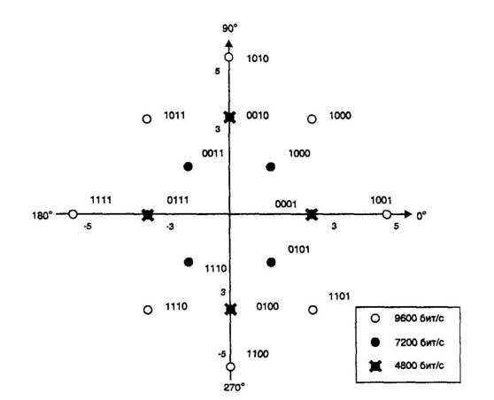

Название реферата: Классификация модемных протоколов
Раздел: Компьютерные сети
Скачано с сайта: www.textreferat.com
Размещено: 2007-01-20 15:18:27
Классификация модемных протоколов
Модемы также можно классифицировать в соответствии с реализованными в них протоколами. Все протоколы, регламентирующие те или иные аспекты функционирования модемов могут быть отнесены к двум большим группам: международные и фирменные.
Протоколы международного уровня разрабатываются под эгидой ITU-T и принимаются им в качестве рекомендаций (ранее ITU-T назывался Международным консультативным комитетом по телефонии и телеграфии – МККТ, международная аббревиатура CCITT). Все рекомендации ITU-T относительно модемов относятся к серии V. Фирменные протоколы разрабатываются отдельными компаниями – производителями модемов, с целью преуспеть в конкурентной борьбе. Часто фирменные протоколы становятся стандартными протоколами де-факто и принимаются частично либо полностью в качестве рекомендаций ITU-T, как это случилось с рядом протоколов фирмы Microcom. Наиболее активно разработкой новых протоколов и стандартов занимаются такие известные фирмы, как AT&T, Motorolla, U.S.Robotics, ZyXEL и другие.
С функциональной точки зрения модемные протоколы могут быть разделены на следующие группы:
Ø Протоколы, определяющие нормы взаимодействия модема с каналом связи (V.2, V.25);
Ø Протоколы, регламентирующие соединение и алгоритмы взаимодействия модема и DTE (V.10, V.11, V.24, V.25, V.25bis, V.28);
Ø Протоколы модуляции, определяющие основные характеристики модемовб предназначенных для коммутируемых и выделенных телефонных каналов. К ним относятся такие протоколы, как V.17, V.22, V.32, V.34, HST, ZyX и большое количество других;
Ø Протоколы защиты от ошибок (V.41, V.42, MNP1-MNP4);
Ø Протоколы зжатия передаваемых данных, такие как MNP5, MNP7, V.42bis;
Ø Протоколы, определяющие процедуры диагностики модемов, испытания и измерения параметров каналов связи (V.51, V.52, V.53, V.54, V.56);
Ø Протоколы согласования параметров связи на этапе ее установления (HandShaking), например V.8.
Приставки “bis” и “ter” в названиях протоколов обозначают, соответственно, вторую и третью модификацию существующих протоколов или протокол, связанный с исходным протоколом. При этом исходный протокол, как правило, остается поддерживаемым.
Некоторую ясность среди многообразия модемных протоколов может внести их условная классификация, приведенная на рис.1.1.
Следует также заметить, что некоторые протоколы нельзя отнести только к одной из приведенных групп, так как они описывают реализацию ряда различных функций, например, таких как модуляция и коррекция ошибок. В первую очередь, это относится к фирменным протоколам (ZyCELL, MNP10 и другие).
2. Протоколы взаимодействия
Для выполнения своих функций модемы должны взаимодействовать как между собой, так и с различного рода оконечным оборудованием. За исключением ранее рассмотренного набора AT-команд, средствами такого взаимодействия выступают стандарты V.25, V.25bis и V.8.
Рекомендации V.25 и V.25bis определяют интерфейс и функции оборудования автоматического вызова и ответа. Различие этих двух стандартов определяется отличием в используемых линиях интерфейса DTE-DCE. Протокол V.8 описывает процедуры взаимодействия двух модемов на этапе установления связи между ними.
2.1. Протокол V.25 (RS-366A)
Согласно Рекомендации V.24 все линии интерфейса DTE-DCE разделены на две группы: серии 100 (общего назначения) и серии 200 (автоматического вызова). Группа серии 100 включает в себя 34 линии различного назначения, служащие как для передачи данных, так и для осуществления управления интерфейсом.
Группа серии 200 включает в себя 12 линий. В табл. 2.1 приведено назначение этих линий. Рекомендация V.25 предусматривает использование цепей двух серий 100 и 200.
V.25 определяет автоматическое вызывное устройство (АВУ), которое позволяет компьютеру, используя номер нужного абонента, установить связь через коммутируемую телефонную сеть с удаленным DTE. Вызывное устройство подключается к DTE с помощью двух 25-контактных разъемов типа D (рис. 2.1).
Таблица 2.1. Назначение линий обмена серии 200 интерфейса V.25
|
|
Номер |
Обозначение |
Назначение цепи |
|
k DTE |
|
1 |
— |
— |
Защитное заземление | ||
|
2 |
211 |
DPR |
Наличие цифры |
х | |
|
3 |
205 |
ACR |
Несостоявшийся вызов (и повторная его передача) |
Х | |
|
4 |
202 |
CRQ |
Запрос соединения |
х | |
|
5 |
210 |
PND |
Запрос следующей цифры |
Х | |
|
6 |
213 |
PWI |
Индикатор электропитания |
Х | |
|
7 |
201 |
SG |
Сигнальное заземление | ||
|
13 |
204 |
DSC |
Удаленная установка подключена |
Х | |
|
14 |
206 |
NB1 |
Цифровой сигнал (2°) |
х | |
|
15 |
207 |
NB2 |
Цифровой сигнал (2') |
х | |
|
16 |
208 |
NB3 |
Цифровой сигнал (22) |
х | |
|
17 |
209 |
NB4 |
Цифровой сигнал (23) |
х | |
|
18 |
— |
RC |
Общий прием | ||
|
19 |
— |
SC |
Общая передача | ||
|
22 |
203 |
DLO |
Канал данных занят |
Х |
Один интерфейс использует линии обмена серии 100 (V.24/V.28), подключенные через АВУ к модему для передачи данных. Другой интерфейс использует линии серии 200 (V.25/V.28) для автоматического вызова.
Линии обмена серии 200 имеют обозначения от 200 до 213 и используются только для установления связи и ее разъединения. Компьютер набирает телефонный номер, посылая через интерфейс RS-366A в DCE по цепям обмена 206 - 209 одну за другой цифры в виде 4-разрядного параллельного кода (табл. 2.2)
После того как последняя цифра передана в АВУ, компьютер посылает еще один четырехбитовый знак конца номера <EON> (End of Number). После установления соединения через КТСОП начинается передача данных по группе линий серии 100.
Рис. 2.1. Устройство автовызова
Таблица 2.2. Кодировка цифрового сигнала но цепям 206—209
|
Номер линии |
209 |
208 |
207 |
206 |
|
Цифра набора "0" |
0 |
0 |
0 |
0 |
|
Цифра набора "1" |
0 |
0 |
0 |
1 |
|
Цифра набора "2" |
0 |
0 |
1 |
0 |
|
Цифра набора "3" |
0 |
0 |
1 |
1 |
|
Цифра набора "4" |
0 |
1 |
0 |
0 |
|
Цифра набора "5" |
0 |
1 |
0 |
1 |
|
Цифра набора "6" |
0 |
1 |
1 |
0 |
|
Цифра набора "7" |
0 |
1 |
1 |
1 |
|
Цифра набора "8" |
1 |
0 |
0 |
0 |
|
Цифра набора "9" |
1 |
0 |
0 |
1 |
|
Конец номера (EON) |
1 |
1 |
0 |
0 |
|
Интервал между цифрами (SEP) |
1 |
1 |
0 |
1 |
2.2. Протокол V.25bis
В отличие от V.25, Рекомендация V.25bis для реализации всех функций автовызова позволяет использовать только группу линий серии 100. В этом случае DTE подключается к DCE через один интерфейс и может с его помощью выполнять как операции автовызова/автоответа, так и операции по пере даче данных (рис. 2.2). Такой подход является наиболее удобным и позволяет объединить АВУ и собственно модем. Поэтому практически все современные интеллектуальные модемы, поддерживающие протоколы передачи по коммутируемым каналам КТСОП, представляют собой устройства со встроенным АВУ.
Для осуществления операций автовызова необходимо определенное взаимодействие между DTE и модемом. Рекомендация V.25bis определяет интерфейс и режимы работы DTE и модема:
Ø режим прямого вызова;
Ø режим вызова по адресу.
Режим прямого вызова основан на использовании операции "Подключить модем к линии" (CDSTL - Connect Dataset To Line), в результате которой DTE устанавливает связь по телефонному номеру, хранящемуся в памяти модема.
Режим вызова по адресу основан на использовании операции "Готовность терминала" (DTR - Data Terminal Ready), а также позволяет вызывающему DTE обмениваться командами с модемом, что расширяет возможности DTE. Эти команды являются частью процедуры
|
Рис. 2.2. Подключение модема автовызова V.25.bis
автоматического вызова и пересылаются из DTE в модем. В ответ на команды DTE получает от модема отклики. Команды и отклики могут пересылаться с использованием асинхронной или синхронной передачи.
При использовании асинхронной передачи каждый старт-стопный знак содержит десять битов: стартовый, 7 информационных бит в коде ASCII, бит контроля четности и столовый бит. При синхронной передаче каждый знак содержит восемь бит: 7-битовый код знака ASCII и бит контроля по нечетности.
При асинхронной передаче используется следующий формат:
<CR><LF>
При синхронной передаче используется два формата. Одним из них является формат байт-ориентированной передачи BSC:
<SYN><STX><Сообщение><ETX>.
Второй бит-ориентированный формат синхронной передачи соответствует протоколу HDLC:
<ADDRES><CONTROL><Сообщение><FCS><FLAG>.
<Сообщение> содержит несколько 8-битовых знаков. При асинхронной передаче каждый восьмибитовый знак представляет собой 7 бит данных и 1 бит проверки на четность. При синхронной передаче по протоколу BSC каждый знак сообщения также состоит из 7 бит данных и одного проверочного бита на нечетность. В случае применения протокола HDLC, передаются восьмибитовые знаки без использования бита паритета. Вместо этого рассчитывается контрольная последовательность кадра FCS размером 16 (CRC-16) или реже 32 бита (CRC-32), позволяющая контролировать возникающие ошибки как в передаваемом сообщении, так и в служебных полях адреса <ADDRES> и управления <CONTROL>.
Различные типы сообщений идентифицируются комбинацией из трех алфавитных знаков в начале сообщения. Кроме трех обязательных знаков сообщение может содержать несколько необязательных параметров, отделяемых друг от друга точкой с запятой.
Таблица 2.3. Команды, передаваемые от DTE к DCE по протоколу V.25bis
|
Команды ОТЕ |
Операция модема |
|
АВС |
Прерывание соединения |
|
СНМ<номер телефона> |
Модем "снимает трубку" и набирает номер. Номер содержит до 50 символов, включая пробелы и дефисы |
|
СР8<адрес памяти> |
Модем набирает номер, выбранный из памяти по указанному адресу |
|
PRN<aдpec памяти>;<номер телефона> |
Модем запоминает номер телефона в памяти по указанному адресу |
|
RLD |
Модем выдает список отложенных номеров |
|
RLF |
Модем выдает список запрещенных номеров |
|
RLI |
Модем выдает список хранимых номеров |
|
RLN |
Модем посылает список хранящихся телефонных номеров |
|
RLS |
Показать состояние регистра управления модема и биты модема |
|
SCRn |
Программирование регистра управления n модема |
|
SMBn |
Установить бит модема в "1" |
|
RMBn |
Установить бит модема в "0" |
|
STS |
Сохранить используемый параметр |
|
RLBn |
Показать состояние бита n модема |
|
RLM |
Показать установку параметров в режиме работы с протоколом MNP |
|
SAT |
Переключиться на работу с набором АТ-команд |
|
CAT |
Переключиться на работу с протоколом V.25bis |
|
VOLn |
Установка громкости работы встроенного громкоговорителя |
|
LSPn |
Переключение варианта использования громкоговорителя |
|
??? |
Вызов вспомогательной функции |
|
DIG |
Модем игнорирует входящий вызов |
|
CIC |
Модем производит соединение по входящему вызову |
|
RST |
Модем возвращается в режим работы с АТ-командами |
Таблица 2.4. Ответы, передаваемые от DCE к DTE по протоколу V.25bis
|
Ответы DCE к DTE |
Значение ответа |
|
VAL |
Получена правильная команда |
|
INV |
Получена неправильная команда |
|
INC |
Получен входящий запрос соединения (звонка) |
|
ONL |
Принят ответный тон. Указывает на то, что на противоположной стороне включено устройство передачи данных (DCE) |
|
CFI <код ошибки> |
Возвращает код отказа при вызове |
|
АВ |
Модем отменил вызов, так как он не обнаружил тонального сигнала набора |
|
СВ |
Собственный выход в линию занят |
|
ND |
Нет ответа станции |
|
ЕТ |
Принят встречный тон |
|
RT |
Был зарегистрирован входящий звонок, но связь не установлена из-за истечения установленного времени |
|
NT |
Нет ответного тонального сигнала от удаленного модема |
|
DL |
Блокировка вызова. В модеме может находится счетчик сообщений об ошибках. Если их число превосходит заданное значение, то автонабор запрещается. Для восстановления этой функции нужно нажать на кнопку "сброс" |
|
RDD |
Задержка повторного набора |
|
CNX <скорость передачи> |
Успешное установление соединения с соответствующей скоростью |
|
LSN <адрес памяти>; <номера телефонов> |
Модем запоминает список телефонных номеров в памяти |
Протокол V.25bis предусматривает свыше 20 типов различных сообщений. В табл. 2.3 и 2.4 приведены некоторые из них.
Для перевода некоторых модемов в режим V.25bis рекомендуется следующая последовательность действий.
1. Использовать команду ATS13=n (n=1 .10) для выбора скорости обмена по последовательному порту.
2. При синхронном режиме передачи по последовательному порту использовать команду АТ&Х для выбора частоты синхронизации.
3. Выдать команду ATS24=n (n=l,2,3):
Ø S24=1 — для перехода в асинхронный режим V.25bis (7 бит данных и 1 бит проверки на четность);
Ø S24=2 — для перехода в синхронный режим HDLC;
Ø S24=3 — для перехода в синхронный режим BSC.
4. Записать текущий профиль по команде AT&W.
Возврат из режима V.25bis может осуществляться программно или аппаратно. В первом случае необходимо использовать команду RST для возврата в режим передачи АТ-команд и затем - AT&F&W для записи изменения конфигурации модема. Ряд внешних модемов позволяет использовать аппаратный способ возврата из режима V.25bis путем выполнения следующих операций:
Ø перевод в режим ручного управления обычно при помощи переключателя T/D;
Ø аппаратный сброс конфигурации модема при помощи нажатия на кнопку RESET;
Ø запись измененной конфигурации командой AT&F&W.
2.3. Протокол V.8
Современные модемы для коммутируемых телефонных каналов обеспечивают работу в соответствии с целым рядом рекомендаций серии V. При этом предельные скоростные возможности модемов, устанавливающих соединение, могут существенно различаться. Для автоматического определения максимально возможной скорости взаимодействующих модемов в сентябре 1994 г. ITU-T была принята Рекомендация V.8 "Процедуры начала сеансов передачи данных по коммутируемой телефонной сети общего пользования". Нормируемые этой рекомендацией процедуры позволяют определить функцию вызова (передача данных, факсимильная связь или текстофон) и наличие сотового доступа к КТСОП.
При этом возможно взаимодействие с теми модемами, которые не поддерживают Рекомендацию V.8, и передачу сигналов взаимодействия с устройствами управления работой эхо-компенсаторов телефонной сети, как это предусмотрено Рекомендацией V.25.
Таким образом, Рекомендация V.8 определяет, какими сигналами должны обмениваться два модема по КТСОП только при начальной организации сеанса передачи данных. По окончании выполнения процедур протокола V.8 обмен сигналами осуществляется в соответствии с выбранным протоколом модуляции серии V.
2.3.1. Сигналы взаимодействия
Рекомендация V.8 предусматривает обмен сигналами в форме одного или нескольких октетов (8 битов). Перед октетом и после него добавляются соответственно стартовый (0) и столовый (1) биты.
Перед каждой информационной последовательностью передается преамбула, состоящая из 10 единиц и двух видов 10-разрядной последовательности фазирования: одна — для последовательности сигналов CI, другая — для СМ и JM.
Эти информационные сигналы передаются со скоростью 300 бит/с путем модуляции нижнего или верхнего канала согласно Рекомендации V.21. Для того чтобы не спутать сигналы Рекомендации V.21 с сигналами, предусмотренными Рекомендацией Т.30 для факсов, выдерживается ограничение для кодирования, запрещающее появление флагов 01111110 протокола HDLC в потоке данных.
Таблица 2.5. Сигналы, применяемые в протоколе V.8
|
Название сигнала |
Определение и некоторые параметры сигнала |
|
CI |
Сигнал индикации вызова. Передается вызывающим модемом для указания общей функции связи. Последовательность С1 состоит из 10 единиц, за которыми следуют 10 бит фазирования и октет функции вызова. Интервалы "включено" должны содержать не менее трех отрезков последовательности CI и иметь продолжительность не более 2 с; интервалы "выключено" (сигнал не передается) должны иметь продолжительность не менее 0,4 с и не более 2 с. Интервалы "включено" содержат повто-ряющуся последовательность битов со скоростью 300 бит/с, которые модулируют нижний канал, определенный в Рекомендации V.21 |
|
CNQ |
Вызывной тон,определенный а Рекомендации Т.30 |
|
СТ |
Любой вызывной тон, допускаемый Рекомендацией V.25 |
|
CV |
Сигнал меню вызова. Передается вызывающим модемом для указания доступных в нем режимов модуляции. Содержит повторяющуюся последовательность битов, которые передаются со скоростью 300 бит/с и модулируют нижний канал, определенный в Рекомендации V.21 |
|
CJ |
Завершение сигнала меню вызова. Подтверждает обнаружение сигнала JM и указывает на завершение сигнала СМ. Сигнал JM содержит три последовательных октета из одних нулей со стартовым и стоповыми битами; эти октеты модулируют нижний канал V.21 со скоростью 300 бит/с |
|
JM |
Сигнал совместного меню Передается отвечающим модемом для указания режимов модуляции, доступных как вызывающему, так и отвечающему модемам. Сигнал JM содержит повторяющуюся последовательность битов, которые передаются со скоростью 300 бит/с и модулируют верхний канал, определенный в Рекомендации V.21 |
|
ANS |
Ответный тон, определенный в Рекомендации V.25 |
|
ANSam |
Модифицированный ответный тон, представляющий собой синусоидальный сигнал с частотой 2100 Гц и переворотами фазы через каждые 450 мс, модулированный по амплитуде синусоидальным колебанием частотой 15 Гц. Модулированная огибающая должна изменяться по амплитуде в диапазоне 0,8-1,2 от ее средней амплитуды |
|
SigC |
Передаваемый вызывающим модемом сигнал, специфический для рекомендаций серии V на модем |
|
SigA |
Передаваемый отвечающим модемом сигнал, специфический для рекомендаций серии V на модем |
Таким образом, формат октета имеет вид:
|
(0) |
B0 |
b1 |
b2 |
b3 |
0 |
b5 |
b6 |
b7 |
(1) |
Биты перечислены слева направо в том порядке, в котором они передаются. Для исключения появления флага протокола HDLC бит b4 всегда равен нулю.
В рекомендации введены следующие специальные функциональные сигналы взаимодействия:
Ø сигнал меню вызова CM (Call Menu);
Ø сигнал совместного меню JM (Joint Menu);
Ø сигнал CJ (сигнал завершения JM);
Ø сигнал индикации вызова CI (Call Indicator).
Определения и параметры этих, а также ряда других сигналов, использованных в Рекомендации V.8, приведены в табл. 2.5.
2.3.2. Информационные сигналы
Октеты передаваемых сигналов распределяются по нескольким категориям:
Ø функции вызова;
Ø режим модуляции;
Ø протокол;
Ø вид доступа к КТСОП (через сотовую сеть или нет).
Используемый метод кодирования позволяет расширить перечень категорий информации для специального применения, причем в большинстве случаев сохраняются короткие сигналы (сохраняющие минимальное число октетов).
Первой категорией информации в последовательности должна быть функция вызова, для последующих категорий очередность следования может быть произвольной. Вся информация одной категории передается в одном октете, либо, если это необходимо, в определенной последовательности октетов (с помощью так называемых октетов расширения).
Биты b0-b3 первого октета указывают категорию информации, а биты b5-b7 определяют ее возможные варианты. Если все возможные варианты Данной категории информации не могут быть определены с помощью битов b5-b7, используются октеты расширения, в которых для задания вариантов отводится 5 бит. В табл. 2.6 приведены варианты, определенные для каждой категории информации.
Для совместимости со следующими версиями Рекомендации V.8 приемники должны игнорировать все биты, коды и октеты, зарезервированные для будущих расширений.
Таблица 2.6. Варианты категорий информации сигналов протокола V.8
|
Категория информации |
Варианты |
|
Функция вызова: октет "callff0" |
Текстофон согласно Рекомендации V.18 Передача и прием данных Функция вызова указана в октете расширения |
|
Режимы модуляции: октет "modn0" октет "modn1" (октет расширения) октет "modn2" (октет расширения) |
Дуплекс V.34 Полудуплекс V.34 V.32bls/V.32 V.22bis/V.22 V.17 Полудуплекс V.29 V.27ter V.26ter V.26bis Дуплекс V.23 Полудуплекс V.23 V.21 |
|
Протокол: октет "prot0" |
Соединение согласно Рекомендации V.42 Соединение по протоколу, указанному в октете расширения |
|
Доступ к КТСОП: октет"access0" |
Вызывающий модем находится в сотовом соединении Отвечающий модем находится в сотовом соединении |
|
Примечание: Отсутствие октета протокола не исключает использования альтернативных средств согласования протокола. Категория доступа к КТСОП указывает на возможность сотового доступа к КТСОП; в отсутствие октета этой категории нет и информации о типе доступа к КТСОП. | |
2.3.3. Процедуры вызывающего модема
На рис. 2.3. схематически изображен обмен сигналами между вызывающим и отвечающим модемами в начале сеанса передачи данных согласно Рекомендации V. 8.
Вызывающий модем после установления соединения и паузы длительностью 1 с начинает передачу сигнала вызова CI, СТ или CNG, либо не передает никаких сигналов, так как в большинстве рекомендаций на модемы передача и обнаружение сигналов вызова являются необязательными. Независимо от того, используется или нет эта функция, работа модема, соответствующего Рекомендации V.8, при получении CI нарушаться не должна.
Использование сигнала CI в качестве сигнала вызова является необязательными. Для обеспечения совместимости с некоторыми существующими отвечающими терминалами требуется использование сигналов CNG или СТ.
Рис. 2.3. Обмен сигналами в начале сеанса передачи данных
Если обнаружен подходящий сигнал sigA, то дальнейший режим работы модема будет определяется этим сигналом.
При обнаружении сигнала ANS модем работает согласно Рекомендации V.32bis, Рекомендации Т.30, или другой подходящей Рекомендации.
В случае обнаружения сигнала ANSam модем не передает никаких сигналов в течение интервала Те, длящегося до начала передачи сигнала СМ. Интервал Те является интервалом молчания, позволяющим нейтрализовать работу устройств управления эхо-компенсаторами. Он начинается по окончании сигнала вызова, а при отсутствии сигнала вызова — после обнаружения сигнала ANSam. Минимальное значение Те составляет 0,5 с. Однако, если нужно обеспечить нейтрализацию сетевого эхо-компенсатора способом, определенным в Рекомендации V.25, выбирается Те 1 с.
По окончании интервала Tе вызывающий модем начинает передачу сигнала СМ и настраивает свой приемник на обнаружение сигнала JM.
Получив не менее двух идентичных последовательностей сигнала JM, вызывающий модем завершает передачу текущего октета и связанных с ним стартового и стопового битов, а затем передает сигнал CJ. После этого вызывающий модем не передает никаких сигналов в течение (75±5) мс, затем передает sigC и далее работает согласно выбранному протоколу модуляции серии V.
Если в JM указаны нули для всех режимов модуляции, то вызывающий модем после передачи CJ может отключиться.
2.3.4. Процедуры отвечающего модема
После подключения к линии в течение 0,2 с отвечающий модем "молчит затем, если он поддерживает обмен сигналами CM/JM, передает сигнал ANS
Если во время передачи ANSam обнаружен подходящий сигнал sigC, модем не должен передавать сигналы в течение (75±5) мс, потом передать соответствующий sigA и продолжить работу согласно соответствующей Рекомендациции на модем.
Если во время передачи ANSam не обнаружено сигнала СМ или подходящего сигнала sigC, модем не передает сигналы в течение (75±5) мс, а затем продолжает работу согласно Рекомендации V.32bis, Рекомендации Т.30 или другой подходящей Рекомендации. Передача сигнала ANSam продолжается в течение (51) с, если она не прекращена при получении СМ или подходящего sigC.
Получив не менее двух идентичных последовательностей СМ, модем передает последовательность JM.
Если предложенная вызывающим модемом функция вызова доступна, то сигнал JM кодируется для указания той же функции вызова, что и в сигнале СМ, и режимов модуляции, доступных как для вызывающего, так и для отвечающего модемов.
Если функция вызова не доступна, то отвечающий модем может указать другую, доступную ему функцию вызова, которая отличается от имеющейся в СМ. При этом сигнал JM должен содержать столько же октетов режимов модуляции, сколько их в СМ, и для всех режимов указать нули.
При отсутствии общих режимов модуляции у вызывающего и отвечающего модемов последовательность JM должна содержать столько же октетов режимов модуляции, сколько СМ, где для всех режимов модуляции установлены нули .
Пересылка JM должна продолжаться до обнаружения сигнала CJ и получения всех трех октетов CJ. Если CJ не принят правильно, для завершения передачи JM может быть использован другой критерий, например обнаружение сигнала sigC, отвечающего выбранному режиму модуляции, или отсутствие СМ в течение приемлемого интервала времени.
Передача JM может быть завершена до того, как будет полностью передана последовательность JM. В этом случае в течение (75±5) мс модем не передается никаких сигналов. Далее передается сигнал sigA, удовлетворяющий выбранному режиму модуляции.
Если в JM для всех режимов модуляции указаны нули, то отвечающий модем может отключиться после приема CJ.
В следующем за процедурами Рекомендации V.8 сеансе передачи данных должен использоваться заданный в сигнале JM режим модуляции с наименьшим номером пункта кодовой таблицы, соответствующий максимально доступной обоим модемам скорости передачи.
Во время начала сеанса передачи данных согласно Рекомендации V.8 никаких специфических требований на связь между DTE и модемом не предъявляется. Поэтому состояние цепей стыка DTE—DCE может определяться процедурами, которые выполняются до и после процедур Рекомендации V.8.
3. ПРОТОКОЛЫ МОДУЛЯЦИИ
3.1. Общие сведения
Основная функция модема — преобразование несущего гармонического колебания (одного или нескольких его параметров) в соответствии с законом изменения передаваемой информационной последовательности. Такое преобразование аналогового сигнала называется модуляцией.
Способ модуляции играет основную роль в достижении максимально возможной скорости передачи информации при заданной вероятности ошибочного приема. Предельные возможности системы передачи можно оценить с помощью известной формулы Шеннона, определяющей зависимость пропускной способности С непрерывного канала с белым гауссовским шумом от используемой полосы частот F и отношения мощностей сигнала и шума PS / PN:
C=F log2 ( 1+ PS / PN ),
где PS = Eb V — средняя мощность сигнала; Eb — энергия, затрачиваемая на передачу одного бита информации; V — скорость передачи информации PN =N0 /2 — средняя мощность шума в полосе частот DF; N0 /2 — спектральная плотность мощности шума.
Пропускная способность определяется как верхняя граница реальной скорости передачи информации V. Приведенное выше выражение позволяет найти максимальное значение скорости передачи, которое может быть достигнуто
Рис. 3.1. Зависимость удельной скорости передачи от отношения сигнал/шум
в гауссовском канале с заданными значениями DF и PS / PN . Например, если отношение сигнал/шум равно 20 дБ, т.е. мощность сигнала на входе модема в 100 раз выше мощности шума, и используется полная полоса телефонного канала тональной частоты (3100 Гц), то максимально достижимая скорость не может превышать 20640 бит/с.
Вероятность ошибочного приема бита в конкретной системе передачи определяется отношением Eb / No . Из формулы Шеннона следует, что возрастание удельной скорости передачи V/AF требует увеличения энергетических затрат (Eb) на один бит (рис. 3.1).
Любая система передачи может быть описана точкой, лежащей ниже приведенной на рисунке кривой (область В). Эту кривую часто называют границей или пределом Шеннона. Для любой точки в области В можно создать такую систему связи, вероятность ошибочного приема у которой может быть настолько малой, насколько это требуется. История развития как систем связи в целом, так и модемной техники, в частности, представляет собой непрекращающуюся серию попыток приблизить их к границе Шеннона, сохраняя при этом низкую вероятность ошибочного приема информационного бита (такие системы используют современные способы модуляции и кодирования).
Современные системы передачи данных требуют, чтобы вероятность необнаруженной ошибки была не выше величины 10-7 .10-12 . Эти значения обеспечивают протоколы исправления ошибок типа MNP1 — MNP4 и V.42, которые будут рассмотрены ниже.
3.2. Способы модуляции
В модемах для телефонных каналов, как правило, используются три вида модуляции: частотная, относительная фазовая (фазоразностная) и квадратурная амплитудная модуляция, часто называемая многопозиционной амплитудно-фазовой.
3.2.1. Частотная модуляция
При частотной модуляции (ЧМ, FSK — Frequency Shift Keying) значениям "0" и "1" информационной последовательности соответствуют определенные частоты аналогового сигнала при неизменной амплитуде. Частотная модуляция весьма помехоустойчива, поскольку помехи телефонного канала искажают в основном амплитуду, а не частоту сигнала. Однако при частотной модуляции неэкономно расходуется ресурс полосы частот телефонного канала. Поэтому этот вид модуляции применяется в низкоскоростных протоколах, позволяющих осуществлять связь по каналам с низким отношением сигнал/шум.
3.2.2. Относительная фазовая модуляция
При относительной фазовой модуляции (ОФМ, DPSK — Differential Phase Shift Keying) в зависимости от значения информационного элемента изменяется только фаза сигнала при неизменной амплитуде и частоте. Причем каждому информационному биту ставится в соответствие не абсолютное значение фазы, а ее изменение относительно предыдущего значения.
Чаще применяется четырехфазная ОФМ (ОФМ-4), или двукратная ОФМ (.ДОФМ), основанная на передаче четырех сигналов, каждый из которых несет информацию о двух битах (дибите) исходной двоичной последовательности. Обычно используется два набора фаз: в зависимости от значения диби-та (00, 01, 10 или 11) фаза сигнала может измениться на 0°, 90°, 180°, 270° или 45°, 135°, 225°, 315° соответственно. При этом, если число кодируемых бит более трех (8 позиций поворота фазы), резко снижается помехоустойчивость ОФМ. По этой причине для высокоскоростной передачи данных ОФМ не используется.
3.2.3. Квадратурная амплитудная модуляция
При квадратурной амплитудной модуляции (КАМ, QAM - Quadrature Amplitude Modulation) изменяется как фаза, так и амплитуда сигнала, что позволяет увеличить количество кодируемых бит и при этом существенно повысить помехоустойчивость. В настоящее время используются способы модуляции, в которых число кодируемых на одном бодовом интервале информационных бит может достигать 8 .9, а число позиций сигнала в сигнальном пространстве - 256 .512.
Квадратурное представление сигналов является удобным и достаточно универсальным средством их описания. Квадратурное представление заключается в выражении колебания линейной комбинацией двух ортогональных составляющих — синусоидальной и косинусоидальной:
S(t)=x(.t)sin(w t+(j)+y(t)cos(w t+(j),
где x(t) и y(t) — биполярные дискретные величины. Такая дискретная модуляция (манипуляция) осуществляется по двум каналам на несущих, сдвинутых на 90° друг относительно друга, т.е. находящихся в квадратуре (отсюда и название представления и метода формирования сигналов).
3.3. Основные протоколы модуляции
3.3.1. Протоколы V.21, Bell 103J
Основой Рекомендации ITU-T V.21 послужил протокол Bell 103J, разработанный американской фирмой AT&T. Протокол V.21 является дуплексным и использует частотную модуляцию и частотное разделение каналов. Полоса частот телефонного канала тональной частоты делится на два подканала. Один из них (нижний) используется вызывающим модемом для передачи своих данных, а другой (верхний) — для передачи информации от отвечающего модема. При этом, в нижнем подканале "1" передается с частотой 980 Гц, а "О" — 1180 Гц. В верхнем подканале "1" передается частотой 1650 Гц, а "О" — 1850 Гц (рис. 3.2).
Рис. 3.2. Спектр сигналов взаимодействующих модемов V.21
Скорость модуляции и скорость передачи данных в этом случае равны 300 Бод и 300 бит/с, соответственно. Несмотря на низкую скорость передачи, протокол V.21 широко используется в качестве "аварийного". Кроме того, он применяется в высокоскоростных протоколах на этапе установления соединения, что предусмотрено рекомендацией V.8. Данный протокол используется также для передачи управляющих команд при факсимильной связи (только по верхнему каналу).
Протокол Bell 103J соответствует протоколу V.21 с точностью до номиналов используемых частот. В нижнем подканале логический "О" передается частотой 1070 Гц, а "1" - 1270Гц, в верхнем подканале: "О"- 2025 Гц, "1" - 2225 Гц, соответственно.
3.3.2. Протоколы V.22, V.22bis
Протокол V.22 является дуплексным протоколом модуляции, предусматривающим использование относительной фазовой модуляции при частотном разделении каналов передачи взаимодействующих модемов. Нижний подканал, как и в протоколе V.21, использует вызывающий модем. Он передает на несущей частоте 1200 Гц. Отвечающий модем, в свою очередь, использует частоту передачи 2400 Гц (рис. 3.3). Скорость модуляции равна 600 Бод. Протокол предусматривает два режима модуляции — ОФМ и ДОФМ. В первом случае скорость передачи достигает значения 600 бит/с, а во втором — 1200 бит/с.
В отличие от V.21, протоколом V.22 впервые предусмотрено использование корректора фазовых искажений (эквалайзера) с фиксированными характеристиками.
Рекомендация V.22bis совпадает с V.22 по значениям несущих частот и скорости модуляции. Предусматриваются два режима модуляции — четырехпозиционная (КАМ-4) и шестнадцатипозиционная (КАМ-16) квадратурная модуляции с передачей двух (дибит) и четырех (квадбит) бит на один сигнальный отсчет. Скорость передачи данных может быть 1200 либо 2400 бит/с соответственно. В режиме 1200 бит/с протокол V.22bis полностью совместим с V.22.
Рис. 3.3. Спектр сигналов модемов V.22
Таблица 3.1. Кодирование сигнала согласно V.22bis
|
Значения первых двух бит в квадбите (2400 бит/с) и дибите (1200 бит/с) |
Изменение фазово |
го квадранта |
|
00 |
1®2 2®3 3®4 4®1 |
90° |
|
01 |
1®1 2®2 3®3 4®4 |
0о |
|
11 |
1®4 2®1 3®2 4®2 |
270° |
|
10 |
1®3 2®4 3®1 4®2 |
180° |
3.3.3. Протокол V.23
Рекомендация V.23 описывает способ передачи информации по коммутируемым каналам со скоростью 600 и 1200 бит/с с частотной модуляцией. Более высокие, по сравнению с протоколом V.21, скорости достигаются за счет полудуплексного режима передачи. В этом случае как вызывающим, так и отвечающим модемами используется вся полоса частот телефонного канала, но в разные моменты времени.
При работе со скоростью 1200 бит/с для передачи логической "1" используется несущая с частотой 1300 Гц, а для логического "0" — 2100 Гц. При скорости 600 бит/с "1" передается той же частотой, а "0" — частотой 1700 Гц. Рекомендация V.23 предусматривает использование неадаптивного эквалайзера. Кроме того, на частоте 420 Гц предусмотрена организация вспомогательного обратного канала со скоростью передачи 75 бит/с и девиацией частоты ±30 Гц. Другими словами, в обратном канале "1" передается частотой 390 Гц, а "0" — 450 Гц.
Данный протокол практически вышел из употребления, и его поддерживает далеко не каждый модем. Благодаря простоте, высокой помехоустойчивости и приличной скорости, он стал базовым для некоторых нестандартных модемов. Протокол V.23 нашел применение в пакетных радиомодемах, использующихся совместно с KB и УКВ радиостанциями. Кроме того, в ряде европейских стран протокол V.23 применяется в информационной системе Videotex.
3.3.4. Протоколы V.26, V.26bis, V.26ter
Все три протокола используют одинаковый вид модуляции — ДОФМ. Частота несущей равна 1800 Гц, скорость модуляции — 1200 Бод. V.26 обеспечивает дуплексную передачу данных только по четырехпроводным выделенным линиям. V.26bis является полудуплексным протоколом, предназначенным для работы по двухпроводным коммутируемым линиям. А протокол V.26ter, благодаря реализации технологии эхоподавления и адаптивной коррекции фазовых искажений, обеспечивает полнодуплексную передачу по коммутируемым двухпроводным линиям.
Протоколы V.26 и V.26bis могут работать в асимметричном дуплексном режиме с обратным каналом со скоростью 75 бит/с в соответствии с протоколом V.23. Все три протокола обеспечивают скорость передачи информации 2400 бит/с при использовании ДОФМ, a V.26bis и V.26ter работают также на скорости 1200 бит/с при использовании двухпозиционной ОФМ.
3.3.5. Протокол V.32
Протокол V.32 основывается на модифицированной КАМ и предполагает полнодуплексную передачу по двухпроводным телефонным каналам. Это означает, что модемы V.32 должны реализовывать функцию эхоподавления.
Основные характеристики протокола V.32 следующие:
Ø дуплексная передача по двухпроводным телефонным каналам общего пользования;
Ø использование КАМ со скоростью модуляции 2400 Бод;
Ø поддержка скоростей передачи в 9600, 4800, 2400 бит/с;
Ø реализация альтернативных схем модуляции при скорости 9600 бит/с:
· КАМ-16;
· КАМ-32 с применением треллис-кодирования (СКК-32);
Ø возможность поддержки асинхронного режима передачи;
Ø значение частоты несущей составляет 1800±7 Гц;
Ø полоса частот, занимаемая сигналом, от 600 до 3000 Гц.
3.3.6. Протокол V.32bis
Протокол модуляции V.32bis разработан для обеспечения передачи данных со скоростью до 14400 бит/с по двухпроводным коммутируемым и выделенным телефонным каналам. Данный протокол принят в качестве стандарта ITU-Т в 1991 году. Основные характеристики модемов, поддерживающих данный протокол, следующие:
Ø дуплексный режим работы по коммутируемым каналам телефонных сетей общего пользования и арендуемым двухпроводным линиям передачи;
Ø реализация эхоподавления;
Ø применение КАМ для режимов синхронной передачи со скоростью модуляции 2400 Бод;
Ø частота несущей равна 1800 Гц;
Ø приемник модема должен обеспечивать бесперебойную работу при не стабильности частоты принимаемого сигнала не более ±7 Гц;
Ø 4 скорости передачи данных:
· 14400, 1200, 9600, 7200 бит/с с треллис-кодированием;
· 800 бит/с без кодирования;
Ø совместимость с модемами V.32 на скоростях 9600 и 4800 бит/с;
Ø обмен управляющими последовательностями и выбор скорости передачи в течение процедуры установления связи;
Ø процедура смены скорости передачи в течение сеанса связи без разрыва соединения;
Ø режим асимметричной передачи не поддерживается; другими словами, скорости передачи и приема каждого взаимодействующего модема должны быть одинаковы;
Ø спектр сигнала ограничен полосой частот от 600 Гц до 3000 Гц.
3.3.7. Протокол V.33
Протокол V.33 предназначен для обеспечения дуплексной связи по четы-рехпроводным выделенным каналам на частоте 1800 Гц и со скоростью модуляции 2400 Бод. В режимах протокола СКК-64 и СКК-128 используется квадратурная амплитудная модуляция совместно с решетчатым кодированием. Благодаря этому достигаются скорости передачи 12000 и 14400 бит/с. Этот протокол очень напоминает V.32bis без эхоподавления. Схема модема содержит дифференциальный кодер и сверточный кодер со скоростью 2/3, аналогичный модемам V.32bis.
3.3.8. Протоколы V.34, V.34+, V.Fast
Рекомендация V.34 была принята ITU-Т 20 сентября 1994 г. Она регламентирует процедуры передачи данных по коммутируемым телефонным каналам со скоростями до 28 800 бит/с. Модем, соответствующий V.34, называют "модемом, обеспечивающим передачу данных со скоростью до 28800 бит/с, для использования в коммутируемой сети общего пользования и на двухточечных двухпроводных выделенных каналах телефонного типа". До принятия этой рекомендации многие производители пользовались промежуточной Рекомендацией V.Fast, которая не предусматривала большого числа нововведений, однако позволяла передавать данные со скоростью 28,8 Кбит/с.
Стандарт предусматривает возможность использования интерфейсов двух типов. Первый интерфейс (предпочтительный) представляет собой разъем с 25 или 26 контактами, причем сигналы данных и синхронизации передаются в симметричном режиме, а сигналы управления — в несимметричном. Такой интерфейс предпочтителен для использования в синхронном режиме передачи. Второй вариант интерфейса (альтернативный) совместим с RS-232C. Выпускаемые в настоящее время модемы V.34, как правило, имеют интерфейс RS-232C с UART 16550, порты ЕРР, ЕСР, PCMCIA или V.35.
Протокол V.34 предполагает большое количество режимов работы и сервиса. Остановимся на некоторых из них.
Скорость модуляции и передачи
Скорость передачи данных выбирается из множества допустимых значений в диапазоне от 2400 до 28800 бит/с с шагом 2400 бит/с. Таким образом возможен выбор 12 значений, а также изменение скорости передачи в процессе сеанса связи. В отличие от более ранних протоколов, скорость модуляции не является фиксированной величиной. Рекомендация предусматривает шесть скоростей модуляции, равных 2400, 2743, 2800, 3000, 3200 и 3429 символам в секунду. Следует отметить, что в Рекомендации V.34 вместо единицы измерения "Бод" введено понятие "символ в секунду".
Для достижения большей скорости передачи необходимо выбирать большее значение скорости модуляции. Однако для полосы пропускания стандартного телефонного канала 3100 Гц (300 — 3400 Гц) две последние модуляционные скорости являются неприемлемыми. Этот факт следует из теоремы Найквиста. Тем не менее, работа на таких скоростях возможна в основном благодаря неидеальности характеристик фильтров каналообразующей аппаратуры.
При введении таких "запредельных" скоростей была учтена тенденция увеличения в КТСОП доли систем передачи с импульсно-кодовой модуляцией (И КМ), в которых реальная полоса пропускания телефонного канала может достигать 3500 Гц.
Кроме того, при установлении соединения через КТСОП в пределах города канал связи чаще всего представляет собой соединение нескольких физических (кабельных) линий. Такой канал при наличии специальных средств частотной коррекции также может обеспечить передачу сигнала с более широким спектром.
Для канала, не позволяющего расширить стандартную полосу пропускания, максимально допустимой символьной скоростью является значение 3000 сим-вблов в секунду. При этой символьной скорости возможно установление соединения со скоростью до 26400 бит/с.
Особенности модуляции
В модемах V.34 применяется многопозиционная КАМ с решетчатым кодированием. В отличие от более ранней Рекомендации V.32, в V.34 увеличена размерность кодируемого информационного элемента.
В предыдущих протоколах с КАМ информационный элемент был двумерным, так как значение элемента характеризовалось амплитудой и фазой сигнала. Рекомендация V.34 предусматривает использование третьего параметра — времени, который порождает еще два измерения информационного элемента. В этом случае каждый кодируемый элемент включает в себя два последовательно передаваемых символа, представляющих собой сигналы, промодулированные по амплитуде и фазе. Таким образом, в четырехмерном пространстве каждый информационный элемент (сигнальная точка) имеет четыре координаты и передается за два символьных интервала. В самой Рекомендации представлено 50 различных сигнальных созвездий, которые обеспечивают работу на всех скоростях. Переход к четырехмерным СКК позволил существенно увеличить общее число сигнальных точек, что, в свою очередь, позволило повысить скорость кода без ухудшения помехоустойчивости. За один символьный интервал теперь может передаваться от одного до девяти бит, т.е. одной точке в четырехмерном пространстве может соответствовать одновременно 18 бит. Однако при формировании ее позиционного номера, как и ранее, используется лишь один избыточный бит решетчатого кодера.
В Рекомендации V.34 сделан шаг вперед и в области треллис-кодирования. Здесь используется сверточный код на 16, 32 и 64 состояния, что позволяет повысить помехоустойчивость всей системы сигналов за счет увеличения свободного евклидова расстояния между соседними путями на решетчатой диаграмме. Однако это приводит к увеличению задержки на принятие решения и к повышению требований к объему памяти и вычислительной мощности процессора модема.
Значение частоты несущей согласно V.34 также не является фиксированным. Оно выбирается из ряда: 1600, 1646, 1680, 1800, 1829, 1867, 1920, 1959, 2000 Гц.
Большое число возможных значений скорости модуляции, скорости-передачи и несущей частоты предоставляет модему возможность использовать имеющуюся полосу частот с максимальной эффективностью.
Особенности дуплексной передачи
Нововведение протокола V.34 в области организации дуплексной связи заключается в его асимметричности по многим параметрам. Передача данных между двумя модемами V.34 может осуществляться не только с разными скоростями, но и на разных несущих частотах с использованием различных СКК.
В стандарте также предусмотрен режим полудуплексной передачи, которая предполагает взаимодействие модемов без схем эхокомпенсации. l
Кроме того, Рекомендация V.34 предусматривает наличие дополнительного канала со скоростью передачи 200 бит/с, который образуется за счет временного уплотнения (мультиплексирования). Этот канал может быть использован как самим модемом для обмена служебной информацией, так и DTE. В последнем случае он называется вторичным каналом. Вторичный канал является асинхронным.
Возможности адаптации
В предыдущих поколениях модемов адаптивная подстройка под конкретные характеристики канала осуществлялась исключительно на приемном конце. В отличие от них в модемах V.34 идея адаптации носит глобальный характер.
В передающую часть модема введен так называемый генератор колец, способствующий синтезу требуемой формы выходного сигнала. При КАМ с большим сигнальным пространством диапазон возможных амплитуд сигналов довольно велик. Из-за этого может возникнуть статистическая зависимость между передаваемой информацией и уровнем сигнала на выходе. Что может повлечь за собой ситуации, при которых выходной сигнал будет иметь малую амплитуду в течение длительного времени. В таких ситуациях возможны сбои декодера и потеря сигнала на приемной стороне. Также возможно формирование сигнала с большим пик-фактором (отношение пикового значения мощности к среднему значению), что приводит к ухудшению общих характеристик системы (увеличивает уровень взаимных и нелинейных искажений). Для решения этой проблемы Рекомендация предлагает специальное предкодирование, в котором двумерное созвездие разбивается на концентрические кольца, содержащие равные количества сигнальных точек с близкой или одинаковой амплитудой.
Стандарт V.34 предусматривает амплитудно-фазовую предкоррекцию сигнала передатчика для устранения межсимвольной интерференции. Эта пред-коррекция позволяет получить выигрыш более 3,5 дБ по сравнению с линейной коррекцией, применяемой в протоколе V.32. Предыскажения на передающей стороне вводятся с помощью цифрового фильтра третьего порядка с комплексными коэффициентами, значения которых передаются от удаленного модема на этапе вхождения в связь. В результате этой процедуры передаваемый сигнал имеет искажения, компенсирующие те, которые он приобретает при прохождении по каналу. За счет этого существенно облегчается работа адаптивного эквалайзера на приемной стороне.
Помимо этого в Рекомендации заложена возможность выбора одного из 11 заранее заданных шаблонов для спектра передатчика. Эти шаблоны предусматривают подъем высокочастотных составляющих спектра, что компенсирует искажения, вносимые абонентскими и соединительными линиями.
В стандарте V.34 предусмотрено введение в передаваемый сигнал нелинейных предыскажений. Это позволяет частично скомпенсировать остаточные специфические искажения сигнала, вносимые аппаратурой ИКМ. Предыскажения приводят к неоднозначной трансформации сигнального пространства, увеличивая защищенность его периферийных точек.
Нововведением является использование иерархической кадровой структуры на физическом уровне. Сигнальные кадры, состоящие из 4-х четырехмерных информационных элементов (8 символов), объединяются в кадры данных, которые, в свою очередь, составляют суперкадр. Суперкадр имеет фиксированную длительность 280 мс. Вследствие этого в систему введены средства для поддержания синхронизации по кадрам.
Широкие возможности адаптации предусмотрены и на этапе вхождения в связь.
Вхождение в связь
Процедура-вхождения в связь состоит из четырех фаз. На первой фазе модемы выбирают наивысший протокол ITU-T серии V, реализованный в обоих модемах. На этом этапе соединение устанавливается согласно Рекомендациям V.25 и V.8. Если оба модема поддерживают протокол V.34, то они переходят ко второй фазе, в ходе которой производится классификация канала связи. В течение 3 и 4 фазы происходит обучение адаптивного эквалайзера, эхокомпен-сатора и ряда других систем модема.
После установления соединения процедура адаптации к каналу связи начинается с того, что передатчик модема посылает в линию специальный тестовый сигнал, представляющий собой последовательность из 21 гармонического колебания разных частот в диапазоне от 150 до 3750 Гц. Приемник удаленного модема, принимая этот сигнал, рассчитывает частотную характеристику канала связи, степень нелинейных искажений, сдвиг частот и ряд других характеристик канала. Затем выбирается, номинальная скорость модуляции, значение несу 111ей частоты, уровень передачи, номер шаблона и коэффициенты предкор-рёктора, скорость передачи данных, число состояний решетчатого кодера, тип СКК, параметры нелинейного кодера и другая информация о желаемой конфигурации удаленного передатчика. Такая же процедура выполняется и в противоположном направлении.
Далее оба модема обмениваются этими установками. Для этого используются протоколы V.22 (скорость 600 бит/с, ОФМ в частотно-разделенных каналах на несущих 1200 и 2400 Гц) и V.42.
Преимущества V.34
Рис. 3.4. Место протокола V.34
В Рекомендации V.34 предусмотрена возможность передачи данных со скоростью 33,6 Кбит/с, однако юридически она была закреплена в виде поправки к стандарту в октябре 1996 г. в Женеве на международной конференции по стандартизации в области телекоммуникаций. Модемы, поддерживающие такую скорость, часто называют модемами V.34+ или V.34bis.
3.4. Факс-протоколы модуляции
3.4.1. Протоколы V.27, V.27bis, V.27ter
Из протоколов V.27, V.27bis, V.27ter два первых предназначены для использования на четырехпроводных арендованных линиях, а V.27ter — на двухпроводных коммутируемых каналах связи. В этих протоколах применяется относительная фазовая модуляция с частотой несущей 1800 Гц. Возможна работа на скоростях 2400 и 4800 бит/с. Скорость передачи 2400 бит/с достигается при скорости модуляции 1200 Бод и использовании ОФМ-4 (ДОФМ). Соответствие между дибитами и разностью фаз следующее: 00 — 0°, 01 — 90°, 11 — 180°, 10 — 270°. Скорость 4800 бит/с, в свою очередь, достигается посредством выбора скорости модуляции 1600 Бод и ОФМ-8. Закон кодирования трибитов значением фазы приведен в табл. 3.2.
Протокол V.27 предусматривает применение самосинхронизирующего скремблера с образующим полиномом 1+x-6+x-7. Схема скремблера приведена на рис. 3.5.
Таблица 3.2. Кодирование трибитов в модемах V.27
|
Трибит |
Разность фаз |
Трибит |
Разность фаз |
|
001 |
0° |
111 |
180° |
|
000 |
45° |
110 |
225° |
|
010 |
90° |
100 |
225° |
|
011 |
135° |
101 |
315° |
Протокол V.27bis позволяет организовать полнодуплексную передачу на четырехпроводных линиях и полудуплексную на телефонных каналах с двухпроводным окончанием. При этом скорость передачи по обратному каналу составляет 75 бит/с.
Рис. 3.5. Скремблер V.27
3.4.2. Протокол V.29
Протокол V.29 предусматривает возможность работы со скоростями 9600, 7200 и 4800 бит/с по четырехпроводным арендованным телефонным каналам. Частота несущего сигнала равна 1700 Гц, а скорость модуляции — 2400 Бод. Применена квадратурная амплитудная модуляция. Сигнальное созвездие протокола изображено на рис. 3.6. При скорости 9600 бит/с поток двоичных символов разделяется на блоки по 4 бита (Ql, Q2, Q3, Q4). Второй (Q2), третий (Q3), четвертый (Q4) биты в блоке определяют изменение фазы сигнала по отношению к фазе предшествующего элемента в соответствии с табл. 3.3, реализуя таким образом закон относительного кодирования. Амплитуда передаваемого сигнального элемента определяется первым битом (Ql) и величиной абсолютной фазы сигнального элемента в соответствии с табл. 3.4.
Принцип формирования сигнала рассмотрим на примере передачи последовательности 1011 0000 1101 0110 0011 0101. Значения амплитуд и фаз сигналов в соответствии с диаграммой на рис. 3.7 представлены в табл. 3.5 (за исходную фазу предыдущей посылки по диаграмме выбрана фаза 135°). Значения фазы 270° и амплитуды 5 первой строки табл. 6.9 получились следующим образом. Для блока Q2Q3Q4=011 по табл. 6.7 находится фаза, равная 135°.
|  |
Рис. 3.6. Сигнальная диаграмма протокола V.29
|
Q2 |
Q3 |
04 |
Изменение фазы |
|
0 |
0 |
1 |
0° |
|
0 |
0 |
0 |
45° |
|
0 |
1 |
0 |
90° |
|
0 |
1 |
1 |
135° |
|
1 |
1 |
1 |
180° |
|
1 |
1 |
0 |
225° |
|
1 |
0 |
0 |
270° |
|
1 |
0 |
1 |
315° |
Таблица 3.3. Закон изменения фазы сигнала для протокола V.29
Это значение определяет скачок фазы по отношению к фазе предыдущей посылки, равной также 135°. В результате абсолютному значению фазы 270° и значению бита Q1=1 по табл. 6.8 соответствует амплитуда, равная 5.
При скорости 9600 бит/с в соответствии с диаграммой на рис. 3.6 применяется сигнал КАМ-16 с четырьмя градациями амплитуды и восемью градациями фазы. На скорости 7200 бит/с при объединении в блок трех бит достаточно 8-и позиционного сигнала. Согласно V.29 в этом случае используются 2 значения амплитуды (3 и v2) и все 8 градаций фаз. Трехбитный блок образуют 3 последние цифры комбинаций, указанных на рис. 3.6.
Таблица 3.4. Закон изменения амплитуды сигнала для протокола V.29
|
Абсолютная фаза |
Q1 |
Амплитуда |
|
0°,90°, 180°,270° |
0 |
3 |
|
1 |
5 | |
|
45°, 135°, 225°, 315° |
0 |
Ö2 |
|
1 |
3Ö2 |
На скорости 4800 бит/с при объединении в блок двух бит для передачи требуется четыре элементарных сигнала. В данном случае эти сигналы имеют вид обычной ФМ-4. Двухбитный блок образуют два средних двоичных знака комбинаций, указанных на рис. 3.6.
Протокол V.29 предусматривает возможность многоканальной передачи. Это означает, что вместо четырех объединенных бит можно организовать передачу
Таблица 3.5. Пример кодирования фазы и амплитуды при передачи последовательности данных по протоколу V.29.
|
Блок данных |
Абсолютна фаза |
Амплитуда |
|
1011 |
270° |
5 |
|
0000 |
315° |
^'2 |
|
1101 |
270° |
5 |
|
0110 |
135° |
V2 |
|
0011 |
270° |
3 |
|
0101 |
225° |
4-1 |
Таблица 3.5. Пример кодирования фазы и амплитуды при передачи последовательности данных по протоколу V.29.
по четырем каналам со скоростью 9600/4=2400 бит/с. Возможны также комбинации скоростей 2400, 4800, 7200 бит/с, дающие в сумме скорость 9600 бит/с. Многоканальный режим также может быть осуществлен при скорости передачи модема 7200 бит/с (объединение до трех каналов) и 4800 бит/с (два канала по 2400 бит/с). Более подробная информация о режимах работы внешнего мультиплексора приведена в табл. 3.6.
Варианты конфигурации 1 —5 рассчитаны на групповую скорость 9600 бит/ с, варианты 6—8 — на скорость 7200 бит/с, а варианты 9—10 — на скорость 4800 бит/с.
В модемах V.29 применяется адаптивный корректор (эквалайзер) и скремблер. Скремблирование передаваемых данных осуществляется по закону образующего полинома 1+x –18 + x –23.
3.4.3. Протокол V.17
Протокол V.17 является самым скоростным факс-протоколом модуляции. По своим же параметрам он похож на протокол V.32bis.
Частота несущего колебания принята равной 1800 Гц, а скорость модуляции — 2400 Бод. При этом используются режимы СКК-16, СКК-32, СКК-64 и СКК-128.
Таблица 3.6. Варианты работы мультиплексора V.29
|
Номер конфигурации |
Скорость в подканалах, бит/с |
Канал мультиплексирования |
Модуляционные биты | |||
|
Q1 |
Q2 |
Q3 |
Q4 | |||
|
1 |
9600 |
А |
х |
х |
х |
х |
|
2 |
7200 |
А |
х |
х |
х | |
|
2400 |
В |
х | ||||
|
3 |
4800 |
А |
х |
х | ||
|
4800 |
В |
х |
х | |||
|
4 |
4800 |
А |
х |
х | ||
|
2400 |
В |
х | ||||
|
2400 |
С |
х | ||||
|
5 |
2400 |
А |
х | |||
|
2400 |
В |
х | ||||
|
2400 |
С |
х | ||||
|
2400 |
D |
х | ||||
|
6 |
7200 |
А |
х |
х |
х | |
|
7 |
4800 |
А |
х |
х | ||
|
2400 |
В |
х | ||||
|
8 |
2400 |
А |
х | |||
|
2400 |
В |
х | ||||
|
2400 |
С |
х | ||||
|
9 |
4800 |
А |
х |
х | ||
|
10 |
2400 |
А |
х | |||
|
2400 |
В |
х | ||||
Соответственно информационная скорость передачи может быть 7200, 9600, 12000 и 14400 бит/с.
3.5. Фирменные протоколы модуляции
3.5.1. Протокол V.32terbo
Протокол V.32terbo был разработан фирмой AT&T. Он опубликован и доступен разработчикам модемов. За исключением модемов фирмы AT&T данный протокол реализован в большинстве модемов корпорации MultiTech и некоторых модемах фирмы U.S. Robotics. Протокол V.32terbo предусматривает более развитые технические решений, чем те, которые предусмотрены в V.32bis:
технология эхоподавления, модуляция с решетчатым кодированием (СКК). В данном протоколе скорость модуляции принята равной 2400 Бод, а несущая частота 1800 Гц. В отличие от V.32bis, за счет применения СКК-256 и СКК-512 обеспечиваются скорости передачи 16800 и 19200 бит/с.
Модемы V.32terbo предъявляют жесткие требования к качеству используемого телефонного канала. Так, для устойчивой работы на скорости 19200 бит/с необходимо, чтобы отношение сигнал/шум в канале было не менее 30 дБ.
3.5.2. Протоколы ZyX, ZyCELL
Протокол ZyX разработан корпорацией ZyXEL Communications и реализован в ее собственных модемах. Данный протокол, также как и V.32terbo, обеспечивает скорости передачи 16800 и 19200 бит/с. Предусмотрено применение технологии эхо-подавления и модуляции решетчатым кодом несущего колебания с частотой 1800 Гц. Скорость модуляции 2400 Бод сохраняется лишь для скорости передачи 16800 бит/с. Скорость 19200 бит/с обеспечивается за счет повышения модуляционной скорости до 2743 Бод при сохранении 256-позици-онной СКК для обеих скоростей передачи. Такое решение позволило снизить требования к качеству канала связи на 2,4 дБ. Однако расширение спектра сигнала за счет увеличения скорости модуляции может негативно сказаться на качестве связи в каналах с большой неравномерностью амплитудно-частотной характеристики.
Протокол ZyCELL разработан специально для передачи информации по телефонным каналам низкого качества (с высоким уровнем помех), какими также являются каналы сотовых сетей связи.
Технология ZyCELL включает в себя 5 процедур физического уровня и 2 процедуры канального, улучшающие реализацию протокола исправления ошибок V.42. Поэтому протокол ZyCELL является не только протоколом модуляции, но и протоколом исправления ошибок.
Процедуры физического уровня:
Ø быстрая повторная синхронизация;
Ø кодирование с прямым исправлением ошибок;
Ø автоматическое регулирование уровня передачи;
Ø динамический выбор скорости передачи;
Ø улучшенная процедура вхождения в связь. Процедуры канального уровня;
Ø модифицированная процедура адаптивного изменения размера передаваемого кадра;
Ø процедура селективного повтора кадра (ARO типа SR или SREJ).
При перемещении мобильного телефона из одной соты в другую происходит переключение с одного радиоканала на другой. При изменении расстояния от сотового радиотелефона до базовой станции производится автоматическое переключецие мощности передатчика. В результате таких переключении радиосвязь, а значит и несущая частота модема, прерывается на 0,2 . 1,2 с. Обычный модем реагирует на такой перерыв связи процедурой повторного соединения, которая обычно продолжается около 10с, или даже рассоединением. При смене сот или изменении мощности сигнала протокол ZyCELL предусматривает применение процедуры быстрой повторной синхронизации (FRS — Fast ReSynchronization).
Большой проблемой при обеспечении безошибочной передачи данных через сотовые системы связи являются замирания сигнала, вызванные его многократным отражением. Из-за различия фаз сигналов, пришедших к приемнику разными путями, возникает интерференция, которая в зависимости от места расположения приемника влияет на мощность принятого сигнала. В результате колебаний амплитуды несущей при передаче данных возникают ошибки и нарушается режим работы модема. Для уменьшения влияния эффекта замирания сигнала в протоколе ZyCELL применяется кодирование с прямым исправлением ошибок (FEC — Forward Error Correction), названное фирмой сотовым FEC (CFEC — Cellular FEC). Применение такого "кода позволяет на приемной стороне исправить ряд ошибок, не запрашивая повторной передачи искаженных кадров. Повторная передача запрашивается только в том случае, когда корректирующей способности кода FEC для исправления всех ошибок оказывается недостаточно. Таким образом, протокол ZyCELL предусматривает гибридное кодирование как кодом с обнаружением ошибок для формирования контрольного поля кадра в рамках протокола канального уровня типа V.42, так и кодом с исправлением ошибок. При очень низком качестве канала это позволяет резко снизить число повторных передач и, следовательно, повысить реальную скорость передачи.
Аналоговые системы сотовой связи первоначально были разработаны для голосовой связи. Они используют компандирование и предварительную коррекцию, которые вносят дополнительные искажения в передаваемый сигнал. Очень сильный сигнал может исказиться компандером при его ограничении по амплитуде. Слишком слабый сигнал даст низкое отношение сигнал/шум на приемной стороне. Поэтому для установки оптимального уровня передаваемого сигнала используется процедура автоматической регулировки уровня передачи (АТРА — Automatic Transmit Power Adjustment).
Протокол ZyCELL для быстрого выбора рабочей скорости передачи и режимов кодирования с целью максимизации пропускной способности предусматривает димал<мческмй сотовый выбор скорости (DCSS — Dynamic Cellular Speed Selection).
Улучшенная процедура квитирования (RHE — Reliable Handshake Еп-hancments) обеспечивает надежное вхождение в связь без повторных попыток даже на линиях с очень высоким уровнем шума.
Протокол ZyCELL обеспечивает скорость передачи данных в диапазоне от 2400 до 14400 бит/с. В нем используется два новых фирменных метода модуляции: ZyCELL-T и ZyCELL-C.
Метод ZyCELL-Т используется при относительно низком уровне помех и обеспечивает передачу данных со скоростями 14400, 12000, 9600, 7200 и 4800 бит/с. При этом используются СКК на 128, 64, 32, 16 и 8 сигнальных позиций соответственно. В режиме ZyCELL-Т на скорости 4800 бит/с реализация СКК-8 дает более высокие показатели допустимого отношения сигнал/шум, по сравнению с режимом ДОФМ протокола V.32 для такой же скорости.
Метод ZyCELL-C применяется при относительно высоком уровне помех и обеспечивает передачу данных со скоростями 4800, 3600 и 2400 бит/с при использовании 8-позиционной СКК. В этом режиме используется кодирование CFEC.
При работе по каналам низкого качества модем может автоматически переключаться между режимами ZyCELL-Т и ZyCELL-C, выбирая наилучший из них для текущих условий передачи. В обоих режимах при всех скоростях передачи скорость модуляции равна 2400 Бод.
Сотовый режим работы можно рекомендовать не только для использования с мобильным сотовым радиотелефоном, но и для работы на обычных телефонных линиях с повышенным уровнем помех. Особенно эффективно его использование на фоне преобладания импульсных помех, кратковременных пропаданий сигнала и повышенном уровне шума.
По результатам тестов ряда авторитетных специализированных журналов ZyCELL признан лучшим, по сравнению с другими протоколами для сотовых систем связи, такими как ETC фирмы AT&T и MNP10.
3.5.3. Протоколы HST, RHST
Протокол HST (High Speed Technology) разработан компанией U.S Robotics и реализован в ее модемах серии Courier. Это асимметричный дуплексный протокол с частотным разделением каналов. Скорость передачи по обратному каналу может составлять 300 или 450 бит/с. Основной канал обеспечивает скорость передачи 4800, 7200, 9600, 1200, 14400 и 16800 бит/с. Скорость модуляции равна 2400 Бод. Применены сигнально-кодовые конструкции на основе решетчатого кодирования. Протокол HST относительно прост и помехоустойчив, так как отсутствует взаимное влияние встречных каналов передачи и не требуется эхо-компенсация.
За счет использования процедуры ASL (Adaptive Speed Leveling) протокол HST позволяет подстраивать скорость передачи под текущее качество используемого телефонного канала. Данная процедура позволяет не только снижать скорость передачи при ухудшении качества канала связи, но и повышать ее при улучшении параметров телефонного канала. Благодаря этому в каждый момент времени передача данных происходит с максимально возможной скоростью для текущего состояния канала.
Отечественное расширение протокола HST, носящее название RHST отличается от базового варианта следующими характеристиками:
Ø максимальная скорость передачи повышена до 21600 бит/с;
Ø на скоростях 16800 бит/с и ниже используется более устойчивый вид модуляции сигнала;
Ø введен режим расширенного управления скоростью передачи. Протокол RHST поддерживается только модемами Русский Курьер 21600.
3.5.4. Протоколы PEP, TurboPEP
Протоколы семейства PEP (Packetized Ensamble Protocol) разработаны фирмой Telebit и реализованы в ее модемах серий TrailBlaizer (PEP) и WorldBlaizer (TurboPEP). Данные протоколы являются полудуплексными. Согласно этим протоколам для обеспечения высокоскоростной передачи полоса пропускания канала тональной частоты разбивается на множество узкополосных частотных подканалов, в каждом из которых происходит независимая передача порции бит из общего двоичного потока. Такие протоколы называют многоканальными, параллельными или протоколами с множеством несущих (multicarrier).
В протоколе PEP полоса тонального канала разбивается на 511 подканалов. В каждом подканале шириной около 6 Гц данные передаются со скоростью модуляции от 2 до 6 Бод. С помощью КАМ один сигнальный элемент переносит от 2 до 6 бит. Максимальная скорость передачи по протоколу PEP составляет 19200 бит/с.
При установке соединения каждый отдельный подканал тестируется на предмет возможности его использования, выбора скорости модуляции и скорости передачи данных в нем. Протокол предусматривает возможность изменения параметров подканалов или их полного отключения в зависимости от изменяющейся помеховой обстановки в течение сеанса связи. При этом дискретность изменения скорости передачи не превышает 100 бит/с.
Протокол TurboPEP за счет увеличения числа частотных подканалов и количества кодируемых бит одним сигнальным элементом может обеспечивать скорость передачи до 23000 бит/с. В отличие от PEP, протокол TurboPEP предусматривает применение СКК с решетчатым кодом, что увеличивает его помехоустойчивость.
Преимущество данных протоколов, по сравнению с традиционными, основанными на модуляции одной несущей, заключается в малой чувствительности к неравномерности АЧХ канала и влиянию импульсных помех.
3.6. Рекомендации по выбору протоколов модуляции
Основные характеристики рассмотренных выше протоколов модуляции, используемых в модемах для КТСОП представлены в табл. 3.7. Под режимом передачи в данной таблице понимается режим передачи (синхронный либо асинхронный) собственно в канале связи.
|
Рекомендация |
Скорость модуляции, Бод |
Скорость передачи, бит/с |
Режим передачи |
Дуплекс/ полудуплокс |
Модуляция |
Тип линии |
Тип окончания |
|
V. 17 (fax) |
2400 |
14400.1200, 9600,7200 |
Синхр |
ПДП |
СКК128.64, 32,16 |
Комм. |
2ПР |
|
V.21 |
300 |
300 |
Любой |
ДПЛ |
чм |
Комм, выд. |
2ПР |
|
V.22 |
600 |
1200,600 |
Любой |
ДПЛ |
ДОФМ, ОФМ |
Комм, выд. |
2ПР |
|
V.22Di8 |
600 |
2400,1200 |
Любой |
ДПЛ |
КАМ16, КАМ4 |
Комм. |
2ПР |
|
V.23 |
1200,600 |
1200,600 |
Любой |
ДПЛ |
ЧМ |
Комм. |
2ПР, 4ПР |
|
V.26 |
1200 |
2400 |
Синхр. |
ДПЛ |
ДОФМ |
Выд. |
4ПР |
|
V.26blS |
1200 |
2400,1200 |
Синхр. |
ПДП |
ДОФМ, ОФМ |
Комм. |
2ПР |
|
V.26ter |
1200 |
2400,1200 |
Любой |
ДПЛ |
ДОФМ, ОФМ |
Комм. |
2ПР |
|
V.27 (fax) |
1600 |
4800 |
Синхр. |
Любой |
Выд. |
4ПР | |
|
V.27bi8 (fax) |
1200, 1600 |
4800,2400 |
Синхр. |
Любой |
ОФМ8, ДОФМ |
Выд. |
2ПР.4ПР |
|
V.27ter (fax) |
1200, 1600 |
4800,2400 |
Синхр. |
ПДП |
ОФМ8, ДОФМ |
Комм. |
2ПР |
|
V.29 (fax) |
2400 |
9600,7200,4800 |
Синхр. |
Любой |
КАМ16, 8 |
Выд. | |
|
V.32 |
2400 |
9600, 4800. 2400 |
Синхр. |
ДПЛ |
СКК32,16, КАМ4, ОФМ |
Комм. |
2ПР.4ПР |
|
V.32bi8 |
2400 |
14400,1200,9600, 7200,4800 |
Синхр. |
ДПЛ |
СКК128.64, 32. 16 |
Комм. |
2ПР.4ПР |
|
V.32terbo |
2400 |
19200,16800 |
Синхр. |
ДПЛ |
СКК256.512 |
Комм. |
2ПР.4ПР |
|
V.33 |
2400 |
14400,12000 |
Синхр. |
ДПЛ |
СКК128.64 |
Выд. |
4ПР |
|
V.34 |
2400, 2743, 2800,3000. 3200.3429 |
28800,26400, 24000,21600, 19200,16800, 14400,1200, 9600,7200,4800, 2400 |
Синхр. |
ДПЛ |
Многомерные СКК |
Комм., выд. |
2ПР |
|
V.34bis (V.34+) |
33600 |
Синхр. |
ДПЛ |
Многомерные СКК |
Комм., выд |
2ПР | |
|
Belll03j |
300 |
300 |
Любой |
ДПЛ |
ЧМ |
Комм. |
2ПР |
|
Bell 202 |
1200 |
Любой |
ДПЛ |
ЧМ |
Комм., выд. | ||
|
Bell 208 |
4800 |
ДПЛ |
Комм. | ||||
|
Bell 212a |
1200 |
ДПЛ |
Комм. |
2ПР | |||
|
HST |
2400 |
300, 450/4800, 7200, 9600. 1200, 14400,16800 |
Синхр. |
Асимм. ДПЛ |
Комм. |
2ПР |
Таблица 3.7. Характеристики протоколов модуляции модемов для КТСОП.
Приведенные характеристики протоколов модуляции необходимо учитывать на этапе выбора модема и исходя из задач, для решения которых планируется его использовать. Зная только перечень поддерживаемых модемом протоколов модуляции, можно определить его максимальную скорость работы, а также возможности по передаче факсимильных сообщений и работе по каналам определенного типа.
Как правило, по умолчанию модемы настроены на автоматических выбор протокола модуляции и его параметров. Это происходит на этапе установления соединения. Модемы стараются выбрать наиболее скоростной из совместно поддерживаемых протоколов модуляции. К сожалению, реальная скорость передачи данных часто оказывается слишком низкой из-за частых повторных передач искаженных информационных блоков протоколов исправления ошибок и (или) протоколов передачи файлов. Принудительное снижение скорости или выбор другого протокола модуляции в таких случаях может привести к значительному увеличению реальной скорости передачи.
Для обоснованного выбора требуемого протокола модуляции и соответствующего модема необходимо знать характеристики качества, а точнее дестабилизирующие факторы, используемого канала связи. Основными из них являются отношение сигнал/шум, уровень мощности принимаемого сигнала, дрожание и скачки фазы, смещение несущей частоты, эхо-затухание на ближнем и дальнем концах линии, параметры импульсных помех и др. В табл. 6.12 приведены основные требования к характеристикам канала, необходимые для нормальной работы модемов с протоколами V.22, V.22bis, V.33, V.32bis и V.34.
Узнать перечисленные выше характеристики используемого канала можно только при помощи специальных измерительных приборов, например отечественного анализатора телефонных каналов AnCOM TDA-3 производства НПП "Аналитик-ТС".
Ряд модемов позволяет измерять некоторые из характеристик канала и выводить из значения либо на жидкокристаллическое табло, либо выдавать в компьютер по соответствующей АТ-команде. Это в основном касается профессиональных моделей модемов.
Наиболее информативными в этом смысле из модемов, являются отечественные модемы серии ST-2442 производства НПП "Аналитик-ТС".
|
Скорость в линии, бит/с | |||||||
|
Дестабилизирующий фактор |
V.34 |
V.34biS, V.32 |
V.22MS, V.22 | ||||
|
28800 |
19200 |
14400 |
9800 |
4800 |
2400 |
1200 | |
|
Допустимое количество транзитов по ТЧ для каналов АСП.п |
0 .2 |
0 .4 |
0 .6 |
2 .12 | |||
|
Отношение сигнал/шум, дБ |
29 .42 |
23 .34 |
>23 |
>16 |
>9 |
14 .18 |
7 .10 |
|
Чувствительность, дБм |
не хуже -30 |
-38 .-50 |
-42 .-56 | ||||
|
Дрожание фазы (размах), угловых градусов |
0 .2 |
>8 |
>15 |
>45 |
15 .50 |
>45 | |
|
Скачки фазы, утл. град. |
0 .2 |
>5 |
>15 |
>60 |
15 .20 |
>б0 | |
|
Смещение несущей частоты, Гц |
— |
К7 .24) | |||||
|
Эхо-сигнал передающего модема |
не более 1 -го эхо с задержкой не более 10. „250 мс |
не влияет на помехозащищенность | |||||
|
Затухание эхо-сигнала принимающего модема, дБ |
— |
>28 |
>20 |
>12 |
>20 |
>12 | |
|
Пачки (серии длительностью более 1 с) импульсных помех, шумовые всплески и замирания сигнала, в том числе: |
распознавание срыва синхронизации и запроса переустанова соединения (retrain) с возможным понижением скорости |
retrain, но возможно и самовосстановление синхронизма |
самовосстановление | ||||
|
— допустимая величина кратковременного (2 с) провала или скачка мощности, дБ |
не хуже 1 |
2 .10 |
3 .40 |
6 .40 | |||
|
—допустимое кратковременное (2 с) превышение уровня шума над сигналом, дБ |
— |
>9 |
>7 |
>14 |
0 .40 | ||
Таблица 3.8. Диапазоны помехозащищенности модемов
Эти модемы имеют так называемый измерительный интерфейс, базирующийся на стандартном механизме АТ-команд и предоставляющий возможность доступа к внутренней памяти DSP со стороны микроконтроллера. Поставляемая вместе с модемами программа ST24view позволяет в графическом виде отобразить мгновенные и осредненные значения параметров, полученных от модема:
мощность принимаемого и передаваемого сигналов, отношение сигнал/шум, частота несущей принимаемого сигнала, искажения спектра сигнала в полосе приема, групповое время прохождения, ошибки систем тактовой и фазовой синхронизации, значения коэффициентов адаптивного корректора, результаты принятия решения о бодовом значении сигнального элемента.
Полученные тем или иным способом характеристики канала, могут быть использованы для обоснования выбора необходимого модема и его протокола модуляции. При этом могут быть использованы данные из табл. 3.8 и рис. 3.4.
Если вы вынуждены использовать низкий по качеству канал и не можете его улучшить, то резонно будет остановиться на низкоскоростном протоколе и соответственно недорогом модеме.
4 ПРОТОКОЛЫ ИСПРАВЛЕНИЯ ОШИБОК
4.1. Протоколы MNP
4.1.1. Общие сведения
Одним из первых протоколов исправления ошибок стал протокол MNP (Microcom Networking Protocol), разработанный фирмой Microcom. Он оказался настолько удачным, что претерпел девять модификаций и расширений, которые получили название Классов протоколов MNP. Классы 1 — 4 обеспечивают исправление ошибок, классы 6, 9,10 — кроме исправления ошибок, выполняют и другие функции.
MNP1 используется для асинхронного побайтного полудуплексного обмена данными. Он был разработан для того, чтобы устройства с минимальными аппаратными ресурсами могли осуществлять контроль ошибок. Из-за своей чрезвычайно низкой эффективности протокол в современных модемах больше не используется.
MNP2 позволяет исправлять канальные ошибки при асинхронной полнодуплексной передаче данных и требует реализуется в модемах с микропроцессорным управлением. Протокол также характеризуется повышенной избыточностью, поскольку в нем при асинхронном режиме передачи в каждый передаваемый символ включаются стартовые и стоповые биты.
MNP3 обеспечивает обмен данными между модемами по протоколу SDLC (Synchronouse Data Link Control) в синхронном режиме, в то время как обмен данными с компьютером остается асинхронным. Из байт данных, принимаемых от DTE, формируются блоки данных (кадры), называемые в терминах MNP пакетами. Каждый пакет передается как один синхронный кадр второго канального уровня модели OSI. Скорость передачи информации при использовании MNP3 повышается за счет того, что уже не требуется передавать дополнительные стартовые и стоповые биты для каждого байта.
•MNP4 предусматривает возможность изменения размера пакета в процессе процедуры согласования параметров передачи, называемой также процедурой адаптивной сборки пакетов (Adaptive Packet Assembly). Пакет может содержать 32, 64, 128, 192 или 256 байт. При большом уровне шумов передаются пакеты меньших размеров. В результате этого увеличивается вероятность безошибочной передачи пакета данных. По высококачественным каналам пересылаются пакеты больших размеров; при этом уменьшается количество избыточной служебной информации. Управление размером пакета со стороны пользователя часто возможно при помощи АТ-команды \Аn.
Протокол MNP4 позволяет повысить скорость передачи за счет оптимизации фазы (режима) передачи данных (Data Phase Optimization), поскольку не требует передавать не изменяющийся заголовок для каждого нового пакета.
Благодаря этому большая часть информационной пропускной способности канала используется для передачи данных.
MNP6 рассчитан на работу со скоростями от 300 до 9600 бит/с. Модем начинает работу на скорости 2400 бит/с и затем изменяет ее в зависимости от типа удаленного модема. Этот протокол предусматривает возможность автоматического переключения из полудуплексного режима в дуплексный и обратно.
MNP9 обеспечивает совместимость с протоколом модуляции V.32 и предусматривает процедуру сжатия, а также повышает эффективность передачи за счет реализации режима селективного повтора искаженных пакетов (ARQ типа SR).
MNP10 предназначен для обеспечения передачи данных при неблагоприятных или изменяющихся условиях на линии связи, характерных, например, для сотовых систем связи. Протокол включает возможность многократных попыток установления связи, динамическую подстройку уровня передачи и размера передаваемого пакета. MNP10 также имеет возможность изменения скорости передачи не только в сторону ее уменьшения, но и в сторону увеличения.
4.2. Протокол V.42
4.2.1. Основные характеристики
 Стандарт V.42, принятый ITU-T в ноябре 1988 года, определяет процедуру LAPM (Link Access Procedure for Modems), схожую по возможностям с MNP4. Преимущества LAPM по сравнению с MNP4 заключаются в повышенной скорости передачи по плохим телефонным каналам и хорошей согласованности с другими стандартами, основанными на протоколе HDLC. Процедура LAPM
Стандарт V.42, принятый ITU-T в ноябре 1988 года, определяет процедуру LAPM (Link Access Procedure for Modems), схожую по возможностям с MNP4. Преимущества LAPM по сравнению с MNP4 заключаются в повышенной скорости передачи по плохим телефонным каналам и хорошей согласованности с другими стандартами, основанными на протоколе HDLC. Процедура LAPM
Рис. 4.1. Функции DCE без аппаратной коррекции ошибок
очень близка к процедурам LAPB и LAPD, применяемых в сетях Х.25 и в сетях интегрального обслуживания ISDN.
Согласно V.42 требуется реализация как процедуры LAPM, так и протокола MNP4, как альтернативного варианта повышения достоверности. Это означает, что модем V.42 может взаимодействовать с модемами типа MNP4. Однако при таком соединении не будут задействованы все возможности V.42. Во время установления связи модем V.42 проверяет, может ли удаленный модем работать согласно полного протокола V.42 или только по протоколу MNP4. При этом предпочтение отдается протоколу V.42. Таким образом, модем V.42 пытается использовать процедуры коррекции ошибок согласно V.42, и если это не получается, то производится попытка запустить MNP4. Если и эта попытка оказывается безуспешной, устанавливается связь без коррекции ошибок.
В отличие от аппаратуры канала данных без аппаратного исправления ошибок (рис. 4.1), рекомендация V.42 выделяет в функциональной схеме DCE дополнительный блок защиты от ошибок (рис. 4.2).
Согласно V.42 блок управления модема должен определять, поддерживает ли удаленная аппаратура функции исправления ошибок, и координировать согласование соответствующих процедур.
Блок защиты от ошибок предназначен для управления процедурами исправления ошибок. Именно он и реализует протокол связи LAPM.
Рис. 4.2. Функции DCE согласно V.42
Рис. 4.3. Цепи, работающие при защите от ошибок, где TD — передаваемые данные; RD — принимаемые данные; TDC — синхронизация передаваемых данных; RDC — синхронизация принимаемых данных; RTS — запрос передачи; RFS — готовность к передаче; RSD — детектор принимаемого линейного сигнала из канала данных.
5 ПРОТОКОЛЫ СЖАТИЯ ДАННЫХ
5.1. Основные методы сжатия
Как известно, применение сжатия данных позволяет более эффективно использовать емкость дисковой памяти. Не менее полезно применение сжатия при передачи информации в любых системах связи. В последнем случае появляется возможность передавать значительно меньшие (как правило, в несколько раз) объемы данных и, следовательно, требуются значительно меньшие ресурсы пропускной способности каналов для передачи той же самой информации. Выигрыш может выражаться в сокращении времени занятия канала и, соответственно, в значительной экономии арендной платы.
где p(xi) — вероятность появления конкретного сообщения xi из N возможных символов алфавита источника. Число N называют объемом алфавита источника.
Энтропия источника Н(Х) выступает количественной мерой разнообразия выдаваемых источником сообщений и является его основной характеристикой. Чем выше разнообразие алфавита Х сообщений и порядка их появления, тем больше энтропия Н(Х) и тем сложнее эту последовательность сообщений сжать. Энтропия источника максимальна, если априорные вероятности сообщений и вероятности их выдачи являются равными между собой. С другой стороны, Н(Х)=0, если одно из сообщений выдается постоянно, а появление других сообщений невозможно.
Единицей измерения энтропии является бит. 1 бит — это та неопределенность, которую имеет источник с равновероятной выдачей двух возможных сообщений, обычно символов "0" и "1".
Энтропия Н(Х) определяет среднее число двоичных знаков, необходимых для кодирования исходных символов (сообщений) источника. Так, если исходными символами являются русские буквы (N=32=2 ) и они передаются равновероятно и независимо, то Н(Х)=5 бит. Каждую буквы можно закодировать последовательностью из пяти двоичных символов, поскольку существуют 32 такие последовательности. Однако можно обойтись и меньшим числом символов на букву. Известно, что для русского литературного текста H(Х)=1,5 бит, для стихов Н(Х)=1,0 бит, а для текстов телеграмм Н(Х)=0,8 бит. Следовательно, возможен способ кодирования в котором в среднем на букву русского текста будет затрачено немногим более 1,5, 1,0 или даже 0,8 двоичных символов.
Если исходные символы передаются не равновероятно и не независимо, то энтропия источника будет ниже своей максимальной величины HMAX(Х)=log2 N. В этом случае возможно более экономное кодирование. При этом на каждый исходный символ в среднем будет затрачено n*= Н(Х) символов кода. Для характеристики достижимой степени сжатия используется коэффициент избыточности RИЗБ = 1—Н(Х)/HMAX(Х). Для характеристики же достигнутой степени сжатия на практике применяют так называемый коэффициент сжатия Кcж. Коэффициент сжатия — это отношение первоначального размера данных к их размеру в сжатом виде, — обычно дается в формате К.сж:1 Путем несложных рассуждений можно получить соотношение RИЗБ ≥1—1 /Kcж.
Известные методы сжатия направлены на снижение избыточности, вызванной как неравной априорной вероятностью символов, так и зависимостью между порядком поступления символов. В первом случае для
кодирования исходных символов используется неравномерный код. Часто появляющиеся символы кодируются более коротким кодом, а менее вероятные (редко встречающиеся) — более длинным кодом.
Устранение избыточности, обусловленной корреляцией между символами, основано на переходе от кодирования отдельных символов к кодированию групп этих символов. За счет этого происходит укрупнение алфавита источника, так как число N тоже растет. Общая избыточность при укрупнении алфавита не изменяется. Однако уменьшение избыточности, обусловленной взаимными связями символов, сопровождается соответствующим возрастанием избыточности, обусловленной неравномерностью появления различных групп символов, то есть символов нового укрупненного алфавита. Происходит как бы конвертация одного вида избыточности в другой.
Таким образом, процесс устранения избыточности источника сообщений сводится к двум операциям — декорреляции (укрупнению алфавита) и кодированию оптимальным неравномерным кодом.
Сжатие бывает с потерями и без потерь. Потери допустимы при сжатии (и восстановлении) некоторых специфических видов данных, таких как видео и аудиоинформация. По мере развития рынка видеопродукции и систем мультимедиа все большую популярность приобретает метод сжатия с потерями MPEG 2 (Motion Pictures Expert Group), обеспечивающий коэффициент сжатия до 20:1. Если восстановленные данные совпадают с данными, которые были до сжатия, то имеем дело со сжатием без потерь. Именно такого рода методы сжатия применяются при передаче информации в СПД.
На сегодняшний день существует множество различных алгоритмов сжатия данных без потерь, подразделяющихся на несколько основных групп.
Кодирование повторов (Run-Length Encoding, RLE).
Этот метод является одним из старейших и наиболее простым. Он применяется в основном для сжатия графических файлов. Самым распространенным графическим форматом, использующим этот тип сжатия, является формат PCX. Один из вариантов метода RLE предусматривает замену последовательности повторяющихся символов на строку, содержащую этот символ, и число, соответствующее количеству его повторений. Применение метода кодирования повторов для сжатия текстовых или исполняемых (*.ехе, *.соm) файлов оказывается неэффективным. Поэтому в современных системах связи алгоритм RLE практически не используется.
Вероятностные методы сжатия
В основе вероятностных методов сжатия (алгоритмов Шеннона-Фано (Shannon Fano) и Хаффмена (Huffman)) лежит идея построения "дерева", положение символа на "ветвях" которого определяется частотой его появления. Каждому символу присваивается код, длина которого обратно пропорциональна частоте появления этого символа. Существуют две разновидности вероятностных методов, различающих способом определения вероятности появления каждого символа:
Ø статические (static) методы, использующие фиксированную таблицу частоты появления символов, рассчитываемую перед началом процесса сжатия;
Ø динамические (dinamic) или адаптивные (adaptive) методы, в которых частота появления символов все время меняется и по мере считывания нового блока данных происходит перерасчет начальных значений частот.
Статические методы характеризуются хорошим быстродействием и не требуют значительных ресурсов оперативной памяти. Они нашли широкое применение в многочисленных программах-архиваторах, например ARC, PKZIP и др., но для сжатия передаваемых модемами данных используются редко — предпочтение отдается арифметическому кодированию и методу словарей, обеспечивающим большую степень сжатия.
Арифметические методы
Принципы арифметического кодирования были разработаны в конце 70-х годов В результате арифметического кодирования строка символов заменяется действительным числом больше нуля и меньше единицы. Арифметическое кодирование позволяет обеспечить высокую степень сжатия, особенно в случаях, когда сжимаются данные, где частота появления различных символов сильно варьируется. Однако сама процедура арифметического кодирования требует мощных вычислительных ресурсов, и до недавнего времени этот метод мало применялся при сжатии передаваемых данных из-за медленной работы алгоритма. Лишь появление мощных процессоров, особенно с RISC-архитектурой, позволило создать эффективные устройства арифметического сжатия данных.
Метод словарей
Алгоритм, положенный в основу метода словарей, был впервые описан в работах израильских исследователей Якоба Зива и Абрахама Лемпеля, которые впервые опубликовали его в 1977 г. В последующем алгоритм был назван Lempel-Ziv, или сокращенно LZ. На сегодняшний день LZ-алгоритм и его модификации получили наиболее широкое распространение, по сравнению с другими методами сжатия. В его основе лежит идея замены наиболее часто встречающихся последовательностей символов (строк) в передаваемом потоке ссылками на "образцы", хранящиеся в специально создаваемой таблице (словаре). Алгоритм основывается на том, что по потоку данных движется скользящее "окно", состоящее из двух частей. В большей по объему части содержатся уже обработанные данные, а в меньшей помещается информация, прочитанная по мере ее просмотра. Во время считывания каждой новой порции информации происходит проверка, и если оказывается, что такая строка уже помещена в словарь ранее, то она заменяется ссылкой на нее.
Большое число модификаций метода LZ — LZW, LZ77, LZSS и др. — применяются для различных целей, Так, методы LZW и BTLZ (British Telecom Lempel-Ziv) применяются для сжатия данных по протоколу V.42bis, LZ77 — в утилитах Stasker и DoudleSpase, а также во многих других системах программного и аппаратного сжатия.
5.2. Сжатие данных в протоколах MNP
Расширяемость MNP при сохранении совместимости с существующими реализациями ярко продемонстрирована в его поддержке Рекомендации ITU-T V.42bis.
В процессе установления соединения передатчик и приемник "оговаривают" использование сжатия данных в процессе. Это выполняется с помощью параметра 9 или 14 блока PDU LR. Параметр 9, который специфицирует сжатие данных MNP5 или MNP7, был расширен, чтобы обеспечить "краткую" форму спецификации V.42bis. Параметр 14 является новым параметром, применяемым для детализации особенностей V.42bis, используемого в данном канале.
Если существует возможность поддерживать MNP5 и (или) MNP7 и V.42bis, передатчик может включить как параметр 9 (сжатие MNP), так и параметр 14 (сжатие V.42bis). Ответственность за выбор типа сжатия данных, который будет использоваться, в этом случае несет приемник. Он возвращает PDU LR, который указывает выбранный тип сжатия данных. Если передатчик и приемник поддерживают несколько методов сжатия, то приемник делает свой выбор в соответствии со следующим приоритетом.
Приемник не включает информацию о поддержке V.42bis в свой PDU LR, если он не принял запрос на V.42bis в LR от передатчика. Если передатчик включил такой запрос в свой PDU LR, но не получил подтверждения, он отказывается от использования сжатия по протоколу V.42bis.
Далее рассмотрим особенности реализации сжатия в протоколах MNP.
Таблица 5.1. Приоритеты выбора метода сжатия
|
Тип сжатия |
Приоритет |
|
V.42bis |
Высокий |
|
MNP7 |
Средний |
|
MNP5 |
Низкий |
5.2.1. Протокол MNP5
Протокол MNP 5 реализует комбинацию адаптивного кодирования с применением кода Хаффмена и группового кодирования. При этом хорошо поддающиеся сжатию данные уменьшают свой исходный объем примерно на 50% и, следовательно, реальная скорость их передачи возрастает вдвое по сравнению с номинальной скоростью передачи данных модемом.
На первом этапе процедуры сжатия используется метод группового кодирования для удаления из потока передаваемых данных слишком длинных последовательностей повторяющихся символов. Этот метод преобразует каждую группу из трех и более (вплоть до 253) одинаковых смежных символов к виду символ и число символов. Поскольку групповое кодирование не связано с большими вычислениями, этот метод особенно хорош для реализации в реальном масштабе времени, в частности, при передаче данных по линиям связи.
Согласно данного метода система группового кодирования проверяет проходящий поток данных. Алгоритм остается пассивным до тех пор, пока в этом потоке не обнаружатся три одинаковых смежных символа. После этого алгоритм начинает счет и удаляет из потока данных до 250 одинаковых следующих друг за другом символов. Счетный байт посылается вслед за тремя исходными символами, и передача продолжается. На рис. 8.2 показан пример группового кодирования потока данных.
Способность метода группового кодирования сжимать длинные последовательности очевидна. Тем не менее, рис. 5.1 иллюстрирует также одну из слабостей данного алгоритма. Кодирование группы из трех символов, наоборот, расширяет поток данных.
Рис. 5.1. Групповое кодирование по протоколу MNP5
что некоторые символы будут встречаться в потоке данных чаще, чем другие. Символы, которые встречаются чаще, кодируются с использованием небольшого числа битов. Реже встречающиеся символы передаются с использованием более длинных кодовых последовательностей.
Когда формат передаваемых данных относительно хорошо известен и постоянен, кодовые битовые последовательности, или лексемы, могут быть определены заранее. Однако адаптивный алгоритм может подстраиваться под поток данных путем "обучения" с последующим изменением своих лексем.
В протоколе MNP5 определяются 256 лексем для всех возможных 8-разрядных величин (октетов). Лексема состоит из 3-разрядного префикса (заголовка) и суффикса (тела, или основы), который может включать от 1 до 8 разрядов. Как передатчик, так и приемник инициализируют свои символьно-лексемные таблицы в соответствии с табл. 5.2. Первая и последняя записи
Таблица 5.2. Карта символьно-лексемного кодирования в начале процедуры уплотнения данных
|
Значение октета (десятичное) |
Заголовок лексемы |
Тело лексемы |
|
0 |
000 |
0 |
|
1 |
000 |
1 |
|
2 |
001 |
0 |
|
3 |
001 |
1 |
|
4 |
010 |
00 |
|
5 |
010 |
01 |
|
6 |
010 |
10 |
|
7 |
010 |
11 |
|
8 |
011 |
00 |
|
… |
… |
… |
|
15 |
011 |
111 |
|
16 |
100 |
0000 |
|
… |
… |
… |
|
31 |
100 |
1111 |
|
32 |
101 |
00000 |
|
… |
… |
… |
|
63 |
101 |
11111 |
|
64 |
110 |
000000 |
|
… |
… |
… |
|
127 |
110 |
111111 |
|
128 |
111 |
0000000 |
|
… |
… |
… |
|
254 |
111 |
1111110 |
|
255 |
111 |
11111110 |
(строки) этой таблицы содержат наиболее и наименее часто встречающиеся октеты, соответственно.
После того как обработан каждый октет, таблица переопределяется, исходя из частоты появления каждого символа. Октетам, которые появляются чаще всего, приписываются наиболее короткие лексемы. На приемном конце лексемы преобразуются в символы. В соответствии с частотой появления тех или иных символов трансформируется таблица приемника. Тем самым осуществляется самосинхронизация, таблиц кодирования и декодирования.
5.2.2. Протокол MNP7
Рис. 5.2. Кодирование при помощи марковского алгоритма прогнозирования и кода Хаффмена
Марковский алгоритм может предсказывать следующий символ в последовательности, исходя из появившегося предыдущего символа. Для каждого октета формируется таблица из всех 256 возможных следующих за ним октетов, расположенных в соответствии с частотой их появления. Октет кодируется путем выбора столбца, соответствующего предыдущему октету (озаглавливающему столбец), с последующим отысканием в этом столбце значения текущего октета. Строка, в которой находится текущий октет, определяет лексему точно так же, как в описанном выше случае кодирования с использованием кода Хаффмена После того как каждый октет будет закодирован, порядок следования записей (октетов) в выбранном столбце изменяется в соответствии с новыми относительными частотами появления октетов.
На рис. 5.2 показан пример кодирования последовательности октетов 3120 в предположении, что перед этим был передан октет 0. Из рис. 5.2. видно, что в столбце, соответствующем предыдущему октету 0, отыскивается запись (строка) октета 3. После этого передается код Хаффмена для этой записи (октета 3) в таблице. Далее в столбце, соответствующем этому только что переданному октету 3, отыскивается строка с записью следующего октета — в данном случае октета 1, и передается код Хаффмена для этой строки и т.д. В этом примере отсутствует иллюстрация адаптивной части алгоритма, изменяющей порядок расположения октетов в каждом столбце.
5.3. Сжатие данных по стандарту V.42bis
В настоящее время методы сжатия данных, включенные в протоколы MNP5 и MNP7, целенаправленно заменяются на метод, основанный на алгоритме словарного типа Лемпеля-Зива-Уэлча (LZW-алгоритме). LZW-алгоритм имеет два главных преимущества:
Ø обеспечивает достижение коэффициента сжатия 4:1 файлов с оптимальной структурой;
Ø LZW-метод утвержден ITU-T как составная часть стандарта V.42bis. .
Метод сжатия данных LZW основан на создании древовидного словаря последовательностей символов, в котором каждой последовательности соответствует единственное кодовое слово. Входящий поток данных последовательно, символ за символом, сравнивается с имеющимися в словаре последовательностями. После того, как в словаре будет найдена кодируемая последовательность, идентичная входной, модем передает соответствующее ей кодовое слово. Алгоритм динамически создает и обновляет словарь символьных последовательностей.
 |
Рис. 5.3. Пример структуры древовидного словаря последовательностей стандарта V.42bis
Алгоритм сжатия, определяемый стандартом V.42bis, весьма гибок. К параметрам, значения которых могут быть согласованы между модемами, относятся: максимальный размер кодового слова, общее число кодовых слов, размер символа, число символов в алфавите и максимальная длина последовательности. Кроме того, алгоритм осуществляет мониторинг входного и выходного потока данных для определения эффективности сжатия. Если сжатия не происходит или оно невозможно (в силу природы передаваемых данных) алгоритм прекращает свою работу. Это свойство обеспечивает лучшие рабочие характеристики при передаче файлов, которые уже были сжаты (заархивированы) или которые не поддаются сжатию.
6 ПРОТОКОЛЫ ПЕРЕДАЧИ ФАЙЛОВ
Наиболее часто используемой функцией коммуникационного программного обеспечения является функция передачи файлов. Она осуществляется с помощью специальных протоколов передачи файлов. Выбор и использование протокола передачи файлов может производится пользователем в явном виде, как это делается в терминальных программах, так и в неявном, например в игровых программах, поддерживающих модемную связь.
Основными задачами протоколов передачи файлов являются:
Ø обеспечение безошибочной передачи данных;
Ø управление потоком передаваемых данных;
Ø передача вспомогательной информации;
Ø защита соединения.
Первые протоколы передачи файлов появились задолго до модемов, поддерживающих аппаратное исправление ошибок. По этой причине задача обеспечения безошибочной передачи по сегодняшний день остается одной из их основных. Для ее реализации применяются в основном те же методы, что и в современных протоколах исправления ошибок. Передаваемые данные разбиваются на блоки (кадры) определенной длины, и в каждый из них включается проверочная комбинация (CRC) для обнаружения ошибок. Эта комбинация формируется по определенному правилу на основе передаваемых информационных битов блока. На приемной стороне производится повторное вычисление проверочной комбинации по тому же правилу и сравнение ее с принятой. При совпадении проверочных комбинаций принимающая сторона посылает подтверждение правильного приема блока (АСК), а при несовпадении — запрос на повторную передачу данного блока (NACK). Таким образом реализуется механизм автоматического запроса повторения (ARQ), аналогичный механизму ARQ в протоколах исправления ошибок типа MNP классов 1—4 и V.42. При этом ARQ также может быть стартстопного типа (SAW), с возвратом на N шагов (GBN) или селективного повторения (SR).
При использовании ARQ типов GBN и SR непрерывная передача неподтвержденных блоков данных может привести к перегрузке буферов как приемника, так и передатчика. Что бы этого не происходило используется управление потоком передаваемых данных.
Перед непосредственной передачей файла необходимо установить соединение на уровне канала данных (уровень 2 модели OSI), передать информацию о имени файла, его размере, дате последней его модификации и т.п., а после передачи — произвести разъединение канала данных. Все это осуществляется при помощи вспомогательной служебной информации, передаваемой по каналу связи.
В последние годы в функции протоколов передачи файлов включают защиту соединения, например проверку пароля.
Среди протоколов, рассчитанных на отсутствие аппаратной защиты от ошибок можно выделить широко распространенные протоколы XModem, XModem-CRC, XModem-1К, YModem, Kermit, ZModem и ряд других.
Если же применяются модемы с аппаратной коррекцией ошибок (поддерживающие протоколы типа MNP или V.42), то предпочтительнее использовать протоколы передачи файлов типа YModem-g и ZModem. В этом случае исключается потеря времени на повторный запрос данных, переданных с ошибками. Протокол Zmodem допускает оба варианта применения.
Известны специализированные протоколы, предназначенные для определенных служб и сетей, — такие как SEALink, Telnet, CompuServe Quick В. Практически все они являются модификациями протокола XModem.
Рассмотрим подробнее наиболее распространенные протоколы передачи файлов.
6.1 Протокол XModem
Протокол XModem, разработанный Бардом Христенсеном, благодаря широкому использованию в справочных службах и введению в недорогие связные программы для PC стал фактическим стандартом для связи между персональными компьютерами.
6.2. Протокол XModem-CRC
Протокол XModem-CRC представляет собой модификацию протокола XModem, в котором обнаружение ошибок производится с использованием циклического кода. Длина проверочной последовательности составляет 16 бит (CRC-16). Благодаря этому гарантируется обнаружение практически всех одиночных и двойных ошибок, всех нечетных ошибок, всех пакетов ошибок длиной до 16 знаков, а также всех 17-битовых ошибок с вероятностью 0,999969 и более длинных пакетов ошибок с вероятностью 0,999984.
В начале соединения вместо знака NAK приемник передает последовательность знаков "с" (63h). Если передатчик не поддерживает протокол XModem-CRC, он игнорирует эти знаки. Не получив ответа на передачу трех знаков "с", приемник переходит на работу по протоколу XModem и передает знаки NAK.
6.3. Протокол XModem-IK
Протокол XModem-IK представляет собой модификацию протокола XModem-CRC с блоками длиной 1024 байт. Использование блоков длиной 1 Кбайт позволяет снизить задержки при передачи файлов по системам связи с временным уплотнением, с использованием современных модемов и в сетях с коммутацией пакетов, где длина пакета, как правило, равна величине 1024 байт либо кратна ей. Кроме того, по сравнению с обычным протоколом Xmodem, уменьшена относительная доля заголовков в общем объеме передаваемой информации.
6.4. Протокол YModem
Протокол YModem представляет собой протокол XModem-CRC, в котором реализована групповая передача кадров. Все программы, реализующие протокол YModem, должны выполнять следующие функции:
Ø передавать информацию о имени и пути файла в блоке 0 в виде строки знаков ASCII, завершающейся знаком NUL (0h);
Ø использовать эту информацию на приемной стороне в качестве имени и пути принятого файла, если иная реализация не оговорена специально;
Ø применять проверку CRC-16 при приеме знаков "с", в противном случае использовать 8-битовую контрольную сумму;
Ø принимать любую комбинацию из 128- и 1024-байтных блоков внутри каждого принимаемого файла;
Ø обеспечивать возможность переключения длины блоков в конце передачи файла (файлов) и (или) в случае частых повторных передач;
Ø передающая программа не должна изменять длину неподтвержденного блока;
Ø передавать в конце каждого файла знаки EOF до десяти раз, пока не будет принят знак АСК;
Ø обозначать конец сеанса связи нулевым (пустым) именем пути.
Коммуникационные программы, в которых не реализованы все перечисленные функции, не совместимы с протоколом YModem. Выполнение этих минимальных требований, однако, не гарантирует надежной передачи файлов в условиях сильных помех.
6.5. Протокол YModem-g
В настоящее время разработаны методы, обеспечивающие передачу данных с очень высокими скоростями и малой вероятностью ошибок. Эти методы реализованы в высокоскоростных модемах и некоторых коммуникационных программах. Применение этих методов позволяет достичь скорости передачи, близкой к теоретически возможной.
Вариант g протокола YModem обеспечивает высокую эффективность передачи данных. Он используется приемником, который инициирует групповую передачу путем посылки знака "g" вместо "с". Передатчик, распознавший этот знак, прекращает ожидание обычных подтверждений по каждому переданному блоку и передает последовательные блоки на полной скорости с использованием метода управления потоком, такого как XON/XOFF.
6.6. Протокол ZModem
Протокол ZModem введен в большинство связных программ и в настоящее время получил самое широкое распространение. Представляя собой развитие протоколов XModem и YModem, он устраняет их недостатки и при соблюдении совместимости имеет ряд преимуществ:
Ø высокое быстродействие благодаря использованию процедуры SBN;
Ø динамическая адаптация к качеству канала связи посредством изменения в широких пределах размера передаваемых блоков;
Ø возможность возобновления прерванной передачи файла с того места, на котором произошел сбой;
Ø повышенная достоверность передачи благодаря использованию 32-разрядной проверочной комбинации (CRC);
Ø возможность отключения функции контроля ошибок передаваемых блоков при использовании модемов с аппаратной коррекцией ошибок. Протокол ZModem явился результатом технического компромисса между следующими противоречивыми требованиями:
Ø простота использования;
Ø обеспечение высокой пропускной способности;
Ø сохранение целостности информации;
Ø достижение высокой надежности передачи;
Ø простота реализации.
6.7. Протокол Kermit
Протокол Kermit предназначен для передачи файлов между компьютерами разных типов, включая большие и миникомпьютеры. Он рассчитан на работу в условиях сильных помех и при больших задержках в канале связи. В отличие от протоколов XModem и Ymodem, в протоколе Kermit используются блоки переменной длины, максимальное значение которых 94 байта. Также как протоколы YModem и Zmodem, протокол Kermit обеспечивает групповую передачу файлов.
Наряду со стандартным протоколом Kermit в ряде программ реализован более эффективный протокол Super Kermit, предусматривающий для уменьшения задержек передачи использовать механизм переменного "окна". В этом "окне" может содержаться от 1 до 32 блоков. На приемном конце канала осуществляется обнаружение ошибок, но повторная передача не запрашивается до тех пор, пока не будут переданы все блоки "окна". Кроме того, в протоколе реализован простой метод сжатия данных, позволяющий дополнительно сократить время передачи. Если удаленный компьютер поддерживает протокол Kermit, то переключение на работу с ним происходит автоматически.
6.8. Рекомендации по выбору протокола передачи файлов
Передача файлов является одной из наиболее трудных задач для пользователя при работе со связной программой. Это объясняется не только многовариантностью выбора, но и тем, что одни и те же протоколы часто имеют разные наименования, иногда для различных протоколов используется одно и то же название. Поэтому, в первую очередь, необходимо убедится в том, что взаимодействующие компьютеры используют один и тот же протокол.
Не рассмотренный здесь протокол ASCII фактически не является протоколом передачи файлов. Он не поддерживает координацию между передающей и приемной системами, исправление ошибок и передачу двоичных файлов. Его можно использовать для передачи текстовых файлов компьютеру, уже подключенному к каналу связи, как альтернативу печати сообщения в режиме on-line. В режиме приема его полезно использовать в случае необходимости документировать на диске весь сеанс связи или его часть. Однако для передачи файлов этот протокол использовать не рекомендуется.
Протокол XModem с контрольной суммой имеется практически в любой связной программе. Метод обнаружения ошибок с помощью контрольной суммы, по сравнению с более совершенным способом проверки с использованием циклического кодирования (CRC), является более быстрым и не требует больших вычислительных ресурсов и объема служебной информации. Модернизированный протокол XModem-CRC устраняет ряд недостатков базового протокола.
Протокол XModem-lK (в ряде программ, например в Procomm, он называется YModem) аналогичен классическому протоколу XModem, отличаясь от него только объемом передаваемых блоков — 1 Кбайт вместо 128 байт. Благодаря большим размерам блока, уменьшается относительная доля передаваемой служебной информации, в том числе и обеспечивающей обнаружение ошибок. Однако, если обнаружена ошибка, требуется повторная передача большого объема данных. При хорошем качестве канала связи протокол XModem-1 К обеспечивает более высокую скорость передачи, чем XModem. Если же качество соединения плохое, то быстродействие протокола XModem оказывается выше.
Для передачи нескольких файлов необходимо использовать протокол YMo-dem, во многих коммуникационных программах называемый как YModem Batch.
При использовании модемов с аппаратной коррекцией ошибок следует применять протокол YModem-g (в ряде программ он называется YModem-g Batch). В этом потоковом протоколе передающая сторона не ожидает подтверждения правильного приема блока данных. В случае обнаружения ошибки принимающая сторона просто прерывает прием. Если установлено соединение с аппаратным исправлением ошибок (например, с помощью модема с протоколом MNP4 или V.42), то протокол YModem-g обеспечивает более высокую скорость передачи файлов, чем варианты протокола XModem или протокол YModem.
Протокол ZModem также представляет собой один из вариантов потокового протокола, не прерывающего передачу в случае обнаружения ошибки. При обнаружении ошибки приемная сторона посылает запрос на повторную передачу поврежденных данных. ZModem позволяет передавать данные через спутниковые каналы и сети с пакетной коммутацией. Им можно пользоваться на больших, мини- и персональных компьютерах с обычными модемами и модемами с аппаратным исправлением ошибок. Экономное использование протоколом пропускной способности обратного канала позволяет оптимальным образом работать модемам с динамическим распределением пропускной способности между двумя направлениями передачи.
Благодаря своим свойствам протокол ZModem можно считать наилучшим выбором независимо от того, установлено ли модемом соединение с исправлением ошибок или нет. Кроме того, стоит иметь в виду, что данный протокол явился основой для большого числа других протоколов, улучшающих те или иные его свойства и, как правило, ориентированных на работу в определенных условиях. К таким протоколам относятся SeaLink, MEGALink, WXModem и ряд других.
Протокол Kermit разработан для передачи информации между большими и миникомпьютерами, которые могут обрабатывать только 7-битовые знаки. При передаче двоичных (бинарных) файлов в протоколе используется метод под названием "8-bit quoting" для передачи восьмого бита отдельно. Однако не все версии протокола Kermit поддерживают этот метод, что существенно ограничивает его применение. Для увеличения реальной скорости обмена протокол Kermit использует предварительную компрессию данных. Недостатком этого протокола является его сложность: для его использования требуется детальное ознакомление с режимами и особенностями его работы. Кроме того, Kermit — относительно медленный протокол и использовать его рекомендуется только в случаях, когда другие варианты отсутствуют. Разновидность этого протокола, известная под названием Super Kermit и предназначенная для использования в сетях типа Telenet или Tymnet, характеризующиеся большими задержками передачи данных.
Таблица 6.1. Сравнительные характеристики распространенных протоколов передачи файлов
|
Параметр |
XModem |
XModem-CRC |
XMode-IK |
YModem |
YModem-g |
|
CS-8 |
+ | ||||
|
CS-16 | |||||
|
CRC-16 |
+ |
+ |
+ |
+ | |
|
CRC-32 | |||||
|
7 бит | |||||
|
8 бит |
+ |
+ |
+ |
+ |
+ |
|
RTS/CTS |
+ |
+ |
+ |
+ |
+ |
|
XON/XOFF | |||||
|
Сжатие данных | |||||
|
Длина файла |
+ |
+ | |||
|
Дата модификации файла | |||||
|
Минимальный размер блока, байт |
128 |
128 |
128 |
128 | |
|
Максимальный размер блока, байт |
128 |
128 |
1К |
1К | |
|
Масштабирование блоков | |||||
|
ARQ типа SAW |
+ |
+ |
+ |
+ | |
|
ARQ типа QBN | |||||
|
ARQ типа SR | |||||
|
Запрос файлов | |||||
|
Групповая передача |
+ |
+ | |||
|
Восстановление | |||||
|
Переименование |
+ |
+ |
+ | ||
|
Прерывание передачи |
+ |
+ |
+ |
+ |
+ |
|
Прерывание передачи отдельного файла | |||||
|
Протоколирование | |||||
|
Дуплексная передача | |||||
|
Дуплексный Chat | |||||
|
Скорость при соединении DTE—DTE, Кбит/с |
19,2 |
19,2 |
19,2 |
19,2 |
19,2 |
|
ZModem |
Kermit |
SeaLInk |
HyperProtocol |
BIModem |
HS/LInk |
Hydra |
|
+ | ||||||
|
+ |
+ | |||||
|
+ |
+ |
+ |
+ |
+ | ||
|
+ |
+ |
+ |
+ | |||
|
+ |
+ | |||||
|
+ |
+ |
+ |
+ |
+ |
+ |
+ |
|
+ |
+ |
+ |
+ |
+ |
+ | |
|
+ |
+ |
+ |
+ |
+ | ||
|
+ |
+ | |||||
|
+ |
+ |
+ |
+ |
+ |
+ |
+ |
|
+ |
+ |
+ |
+ |
+ | ||
|
64 |
10 |
128 |
128 |
16 |
64 |
64 |
|
8К |
9К |
128 |
2К |
4К |
4К |
2К |
|
+ |
+ |
+ |
+ | |||
|
+ |
+ |
+ |
+ |
+ |
+ |
+ |
|
+ |
+ |
+ |
+ |
+ |
+ | |
|
+ |
+ |
+ |
+ | |||
|
+ |
+ |
+ |
+ | |||
|
+ |
+ |
+ |
+ |
+ |
+ | |
|
+ |
+ |
+ |
+ | |||
|
+ |
+ |
+ |
+ |
+ |
+ |
+ |
|
+ |
+ |
+ |
+ |
+ |
+ |
+ |
|
+ |
+ |
+ |
+ |
+ | ||
|
+ |
+ |
+ |
+ |
+ | ||
|
+ |
+ |
+ | ||||
|
+ |
+ |
+ | ||||
|
38,4 |
19,2 |
19,2 |
115,2 |
115,2 |
115,2 |
57,6 |
В табл. 6.1 приведены сравнительные характеристики наиболее распространенных протоколов передачи файлов. Эта информация может оказать дополнительную помощь при выборе наиболее подходящего для ваших условии протокола.
Продолжение таблицы 6.1
Одним из самых быстрых является протокол HyperProtocol. Как и Zmodem, он является потоковым протоколом, но помимо этого может сжимать передаваемые данные, как и протокол Kermit. Согласно протокола HyperProtocol приемник посылает подтвержение не после каждого файла, а в конце всего сеанса передачи. Он может быть с успехом использован для передачи информации по высрокоскоростньтм каналам.
Особенность протокола BiModem состоит в том, что он является дуплексным, т.е. позволяет одновременно передавать файлы во встречных направлениях. Протокол BiModem также предусматривает возобновление передачи после обрыва связи и гибкое изменение размера блока от 16 байт до 16 Кбайт.
Однако Bi Modem недостаточно устойчиво работает по каналам с высоким уровнем помех.
Близким по функциональным возможностям к протоколу Bi Modem является дуплексный протокол HS/Link. Также как и протокол BiModem, он предоставляет возможность пользователям во время предачи файлов общаться в режиме Chat.
Высокоскоростной дуплексный протокол Hydra отличается хорошей ус-тойчивочтью работы на линиях низкого качества и каналах с большими задержками передачи.
Часто выбор протокола передачи файлов ограничен возможностями используемой коммуникационной программы. Тем не менее, существует возможность подключения некоторых протоколов передачи файлов к отдельным терминальным программам, которые штатно не предусматривают их использование. Это возможно в основном для большинства программ для DOS. Подключаемые внешние протоколы в таком случае должны быть в виде исполнямых (*.ехе) файлов.
Список используемой литературы
1. Лагутенко О.И. “Модемы. Справочник пользователя”, Лань, С-Пб, 1997г.
2. Белоцерковецкий И.Л. Протоколы передачи файлов для модемов, Сети №3,1995г.
3. Блэк Ю. “Сети ЭВМ: Протоколы, стандарты, интерфейсы”, М., Мир, 1990г.
4. Фролов А.В., Фролов Г.В. “Программирование модемов”, М., “Диалог-Мифи”, 1994г.